# Comando para atualizar todos os pacotes
# update.packages(ask = FALSE)
pacman::p_load(tidyverse,psych,corrplot,pander,knitr,lavaan,car,DescTools,
kableExtra,readxl,effectsize,broom,report,ggpubr,ez)
# options(repos = c(CRAN = "https://cran.rstudio.com/"))Estatística no R - 2026.1
Disciplina: Metodologia em Pesquisa Quantitiva
Esta disciplina tem o objetivo de instrumentalizar o aluno para a realização das análises estatísticas mais empregadas em pesquisas em psicologia, no ambiente de programação R. Inicialmente, vamos carregar e ativar os pacotes que iremos utilizar na disciplina.
Carregamento dos pacotes
A função p_load, do pacote pacman, verifica se um pacote está instalado e em caso negativo tenta instalar o pacote a partir do CRAN ou de qualquer outro repositório na lista de repositórios do pacman.
Utilizando os comandos a seguir, você pode baixar a versão completa deste arquivo em .html e em .qmd, com todas as funções aprendidas no curso e outras adicionais.
link_StatR_2026_html <- "https://github.com/jmhbueno/Arquivos_aulas/raw/main/2026_StatR_alunos.html"
## Importa o arquivo do github para o computador (fora do R)
download.file(
url = link_StatR_2026_html,
destfile = "StatR_2026_github.html",
mode = "wb")
link_StatR_2026_qmd <- "https://github.com/jmhbueno/Arquivos_aulas/raw/main/2026_StatR_alunos.qmd"
## Importa o arquivo do github para o computador (fora do R)
download.file(
url = link_StatR_2026_qmd,
destfile = "StatR_2026_github.qmd",
mode = "wb")Importar banco de dados
dataset
O banco de dados a seguir gerou os dados publicados no artigo “Sintomas de depressão e ansiedade em uma amostra representativa de universitários espanhóis, portugueses e brasileiros”. Sugere-se a leitura desse artigo para a compreensão dos dados.
# Baixar o banco de dados dataset da internet (github) para o seu computador
## Cria um objeto com o endereço (link) onde está o arquivo
link_dataset <- "https://raw.githubusercontent.com/jmhbueno/R_Stat/04bd66b277606ad8d68047b49eda010e5739d9b2/dataset_mapfre.csv"
## Importa o arquivo do github para o computador (fora do R)
download.file(
url = link_dataset,
destfile = "dataset.csv",
mode = "wb")
dataset <- # nome atribuído ao dataframe
read.csv( # função da base para importar arquivos csv
"dataset.csv", # nome do arquivo csv
encoding="UTF-8", # codificação para ler cedilhas, til, etc...
stringsAsFactors=TRUE) # transformar variáveis string em fator
## OBS: É necessário que o arquivo csv esteja no diretório de trabalho do R.
# Observar o banco de dados
glimpse(dataset)Rows: 1,957
Columns: 94
$ country <fct> SPAIN, SPAIN, SPAIN, SPAIN, SPAIN, SPAIN, SPAIN, SPAIN, …
$ sex <fct> NA, NA, NA, NA, NA, NA, NA, M, M, M, M, M, M, M, M, M, M…
$ age <int> 18, NA, 26, NA, 20, NA, NA, 19, 21, 21, 23, 21, 22, 20, …
$ grado <fct> "Educ.Infantil …
$ curso_ou_ano <int> 1, 2, 4, 3, 1, NA, 3, 1, 3, 3, 4, 4, 4, 2, 4, 3, 3, 1, 1…
$ ceri_1 <int> 1, 1, 1, 2, 1, 2, 1, 1, 1, 2, 3, 2, 1, 1, 2, 1, 2, 2, 1,…
$ ceri_2 <int> 1, 2, 1, 2, 3, 2, 3, 1, 1, 3, 2, 3, 2, 2, 2, 1, 3, 3, 3,…
$ ceri_3 <int> 2, 2, 2, 1, 2, 2, 3, 2, 1, 2, 1, 3, 2, 3, 2, 1, 3, 1, 2,…
$ ceri_4 <int> 1, 1, 1, 2, 1, 1, 2, 1, 1, 3, 3, 3, 1, 2, 3, 1, 2, 1, 2,…
$ ceri_5 <int> NA, 1, 2, 1, NA, 2, 2, 1, 1, 3, 1, 2, 2, 1, 2, 1, 2, 1, …
$ ceri_6 <int> 2, 2, 1, 2, 1, 1, 2, 1, 2, 1, 4, 3, 3, 2, 3, 2, 2, 2, 1,…
$ ceri_7 <int> 1, 1, 1, 1, 1, 2, 2, 1, 1, 2, 2, 1, 1, 2, 1, 1, 2, 1, 1,…
$ ceri_8 <int> 1, 1, 1, 1, 2, 1, 2, 1, 1, 1, 1, 1, 1, 2, 2, 1, 2, 1, 1,…
$ ceri_9 <int> 1, 2, 2, 2, 3, 3, 4, 2, 1, 4, 4, 4, 3, 3, 2, 3, 3, 2, 2,…
$ ceri_10 <int> 1, 1, 1, 1, 2, 2, 1, 1, 1, 4, 2, 3, 2, 1, 2, 1, 2, 1, 1,…
$ cerm_1 <int> 1, 1, 1, 1, 1, 2, 1, 1, 1, 2, 1, 1, 2, 1, 3, 1, 1, 1, 1,…
$ cerm_2 <int> 2, 2, 1, 1, 3, 2, 2, 1, 1, 3, 1, 3, 2, 3, 2, 1, 1, 1, 1,…
$ cerm_3 <int> 1, 1, 1, 1, 1, 2, 4, 1, 1, 2, 2, 2, 1, 1, 2, 1, 1, 1, 2,…
$ cerm_4 <int> 1, 1, 1, 1, 2, 1, 4, 1, 1, 1, 1, 1, 1, 1, 2, 1, 1, 1, 1,…
$ cerm_5 <int> 1, 1, 1, 2, 2, 1, 2, 1, 1, 2, 1, 1, 1, 1, 3, 1, 1, 2, 1,…
$ cerm_6 <int> 2, 1, 1, 2, 1, 1, 2, 1, 2, 2, 3, 3, 2, 2, 1, 2, 1, 2, 1,…
$ cerm_7 <int> 1, 1, 1, 1, 1, 2, 2, 1, 1, 3, 2, 1, 2, 2, 2, 1, 1, 1, 1,…
$ cerm_8 <int> 1, 1, 1, 1, 1, 1, 1, 1, 1, 1, 1, 1, 1, 1, 2, 1, 1, 1, 1,…
$ cerm_9 <int> 3, 3, 2, 2, 4, 3, 3, 2, 3, 4, 4, 4, 3, 3, 2, 2, 3, 4, 2,…
$ cerm_10 <int> 2, 1, 1, 1, 1, 2, 1, 1, 1, 4, 2, 3, 3, 1, 2, 1, 1, 1, 2,…
$ cybvic_1 <int> 1, 1, 1, 2, 1, 1, 2, 2, 2, 2, 1, 1, NA, 1, 1, 1, 1, 1, 1…
$ cybvic_2 <int> 1, 1, 1, 1, 1, 1, 1, 1, 1, 2, 1, 1, 1, 1, 1, 1, 1, 1, 1,…
$ cybvic_3 <int> 1, 1, 2, 2, 1, 2, 1, 3, 1, 2, 1, 2, 1, 1, 1, 1, 1, 1, 1,…
$ cybvic_4 <int> 1, 2, 3, 2, 2, 1, 3, 2, 1, 2, 3, 1, 1, 1, 1, 1, 1, 1, 1,…
$ cybvic_5 <int> 1, 1, 1, 2, 2, 2, 2, 2, 1, 4, 1, 1, 1, 1, 1, 1, 1, 1, 1,…
$ cybvic_6 <int> 1, 1, 1, 2, 1, 3, 1, 1, 1, 3, 1, 1, 1, 1, 1, 1, 1, 1, 1,…
$ cybvic_7 <int> 1, 1, 1, 1, 1, 1, 1, 1, 1, 2, 2, 1, 1, 1, 1, 1, 1, 1, 1,…
$ cybvic_8 <int> 1, 1, 1, 2, 1, 2, 1, 1, 1, 4, 1, 1, 1, 1, 1, 1, 1, 1, 1,…
$ cybvic_9 <int> 1, 1, 1, 1, 1, 1, 1, 1, 1, 2, 1, 2, 1, 1, 2, 1, 1, 1, 1,…
$ cybvic_10 <int> 1, 1, 1, 1, 1, 2, 1, 1, 1, 1, 1, 1, 1, 1, 1, 1, 1, 2, 1,…
$ cybagress_1 <int> 1, 1, 1, 1, 1, 1, 2, 1, 2, 3, 1, 1, NA, 1, 1, 1, 1, 1, 1…
$ cybagress_2 <int> 1, 1, 1, 1, 1, 1, 1, 1, 1, 4, 1, 1, 1, 1, 1, 1, 1, 1, 1,…
$ cybagress_3 <int> 1, 1, 1, 1, 2, 3, 1, 1, 1, 2, 1, 2, 1, 1, 1, 1, 1, 1, 1,…
$ cybagress_4 <int> 1, 1, 1, 2, 1, 1, 2, 1, 1, 3, 1, 1, 1, 1, 1, 1, 1, 1, 1,…
$ cybagress_5 <int> 1, 1, 1, 1, 1, 1, 2, 1, 1, 2, 1, 1, 1, 1, 1, 1, 1, 1, 1,…
$ cybagress_6 <int> 1, 1, 1, 1, 1, 2, 1, 1, 1, 4, 1, 1, 2, 1, 1, 1, 1, 1, 1,…
$ cybagress_7 <int> 1, 1, 1, 1, 1, 1, 1, 1, 1, NA, 1, 1, 1, 1, 1, 1, 1, 1, 1…
$ cybagress_8 <int> 1, 1, 1, 1, 1, 2, 1, 1, 1, 4, 1, 1, 1, 1, 1, 1, 1, 1, 1,…
$ cybagress_9 <int> 1, 1, 1, 1, 1, 1, 1, 1, 1, 2, 1, 1, 1, 1, 1, 1, 1, 1, 1,…
$ cybagress_10 <int> 1, 1, 1, 1, 1, 2, 2, 1, 1, 1, 1, 1, 1, 1, 1, 1, 1, 1, 1,…
$ bai_1 <int> 0, 0, 1, 0, 0, 1, 1, NA, NA, NA, 0, 0, 0, 0, 0, 0, 0, 0,…
$ bai_2 <int> 0, 0, 1, 1, 1, 0, 3, NA, NA, NA, 0, 0, 0, 0, 0, 0, 0, 0,…
$ bai_3 <int> 0, 0, 0, 0, 0, 0, 2, NA, NA, NA, 0, 0, 0, 0, 0, 0, 0, 0,…
$ bai_4 <int> 0, 0, 0, 1, 0, 2, 3, NA, NA, NA, 0, 0, 0, 0, 0, 0, 0, 0,…
$ bai_5 <int> 0, 1, 0, 1, 0, 2, 2, NA, NA, NA, 0, 0, 0, 0, 0, 0, 0, 0,…
$ bai_6 <int> 0, 0, 0, 0, 0, 0, 0, NA, NA, NA, 0, 0, 0, 0, 0, 0, 0, 0,…
$ bai_7 <int> 0, 1, 0, 0, 0, 1, 0, NA, NA, NA, 0, 0, 0, 0, 0, 0, 0, 0,…
$ bai_8 <int> 0, 0, 0, 1, 0, 1, 1, NA, NA, NA, 0, 0, 0, 0, 0, 0, 0, 0,…
$ bai_9 <int> 0, 0, 0, 0, 0, 0, 3, NA, NA, NA, 0, 0, 0, 0, 0, 0, 0, 0,…
$ bai_10 <int> 0, 0, 1, 1, 1, 1, 3, NA, NA, NA, 0, 0, 0, 0, 0, 0, 0, 0,…
$ bai_11 <int> 0, 0, 0, 0, 0, 0, 3, NA, NA, NA, 0, 0, 0, 0, 0, 0, 0, 0,…
$ bai_12 <int> 0, 0, 0, 1, 0, 2, 3, NA, NA, NA, 0, 0, 0, 0, 0, 0, 0, 0,…
$ bai_13 <int> 0, 0, 0, 1, 0, 1, 3, NA, NA, NA, 0, 0, 0, 0, 0, 0, 0, 0,…
$ bai_14 <int> 0, NA, 0, 1, 0, 0, 3, NA, NA, NA, 0, 0, 0, 0, 0, 0, 0, 0…
$ bai_15 <int> 0, 0, 0, 0, 0, 0, 3, NA, NA, NA, 0, 0, 0, 0, 0, 0, 0, 0,…
$ bai_16 <int> 0, 0, 0, 0, 2, 0, 3, NA, NA, NA, 0, 0, 0, 0, 0, 0, 0, 0,…
$ bai_17 <int> 0, 0, 0, 0, 2, 1, 3, NA, NA, NA, 0, 0, 0, 0, 0, 0, 0, 0,…
$ bai_18 <int> 0, 0, 0, 1, 2, 0, 1, NA, NA, NA, 0, 0, 0, 0, 0, 0, 0, 0,…
$ bai_19 <int> 0, 0, 0, 0, 2, 0, 2, NA, NA, NA, 0, 0, 0, 0, 0, 0, 0, 0,…
$ bai_20 <int> 0, 0, 0, 0, 2, 1, 1, NA, NA, NA, 0, 0, 0, 0, 0, 0, 0, 0,…
$ bai_21 <int> 0, 0, 0, 0, 1, 1, 1, NA, NA, NA, 0, 0, 0, 0, 0, 0, 0, 0,…
$ bdi_1 <int> 0, 0, 0, 0, 0, 0, 0, 1, NA, NA, 0, 0, 0, 0, 0, 0, 0, 0, …
$ bdi_2 <int> 0, 0, 1, 0, 1, 0, 1, 1, NA, NA, 1, 1, 0, 0, 0, 0, 1, 0, …
$ bdi_3 <int> 0, 0, 1, 0, 0, 0, 0, 1, NA, NA, 1, 0, 0, 0, 0, 0, 1, 0, …
$ bdi_4 <int> 0, 0, 1, 0, 0, 0, 0, NA, NA, NA, 0, 0, 0, 0, 0, 0, 0, 0,…
$ bdi_5 <int> 0, 0, 1, 0, 0, 0, 0, 0, NA, NA, 0, 0, 0, 1, 0, 0, 0, 0, …
$ bdi_6 <int> 0, 0, 0, 0, 0, 0, 0, NA, NA, NA, 0, 0, 0, 0, 0, 0, 0, 0,…
$ bdi_7 <int> 0, 0, 2, 0, 0, 0, 0, NA, NA, NA, 0, 0, 0, 0, 0, 0, 0, 0,…
$ bdi_8 <int> 0, 0, 3, 1, 1, 0, 1, 2, NA, NA, 1, 1, 0, 1, 1, 0, 0, 0, …
$ bdi_9 <int> 0, 0, 0, 0, 0, 0, 0, 0, NA, NA, 0, 0, 0, 0, 0, 0, 0, 0, …
$ bdi_10 <int> 0, 0, 0, 0, 0, 0, 0, 0, NA, NA, 0, 0, 0, 0, 1, 0, 0, 0, …
$ bdi_11 <int> 0, 0, 0, 0, 1, 0, 0, 0, NA, NA, 0, 0, 0, 0, 0, 0, 0, 0, …
$ bdi_12 <int> 0, 0, 1, 1, 0, 1, 0, 3, NA, NA, 0, 0, 0, 0, 0, 0, 0, 0, …
$ bdi_13 <int> 0, 0, 0, 0, 0, 0, 0, 0, NA, NA, 0, 0, 0, 0, 0, 0, 0, 0, …
$ bdi_14 <int> 0, 0, 0, NA, 0, 0, 0, 1, NA, NA, 0, 0, 0, 0, 0, 0, 0, 0,…
$ bdi_15 <int> 0, 0, 1, 1, 1, 0, 0, 0, NA, NA, 0, 0, 0, 0, 0, 1, 0, 0, …
$ bdi_16 <int> 0, 0, 1, 0, 1, 0, 0, 0, NA, NA, 1, 0, 0, 0, 1, 1, 0, 1, …
$ bdi_17 <int> 0, 0, 0, 0, 0, 0, 0, 0, NA, NA, 0, 0, 0, 0, 0, 0, 0, 0, …
$ bdi_18 <int> 0, 0, 1, 0, 1, 0, 0, 0, NA, NA, 1, 0, 0, 0, 0, 1, 0, 0, …
$ bdi_19 <int> 1, 2, 1, 0, 2, 0, 1, 0, NA, NA, 0, 1, 0, 0, 1, 1, 0, 0, …
$ bdi_20 <int> 0, 0, 1, 0, 1, 1, 0, 0, NA, NA, 0, 0, 0, 0, 0, 0, 0, 0, …
$ bdi_21 <int> 0, 0, 1, 0, 0, 0, 0, 0, NA, NA, 0, 0, 0, 0, 0, 0, 0, 0, …
$ id <int> 1, 2, 3, 4, 5, 6, 7, 8, 9, 10, 11, 12, 13, 14, 15, 16, 1…
$ bdi_sum <int> 1, 2, 16, 3, 9, 2, 3, 9, NA, NA, 5, 3, 0, 2, 4, 4, 2, 1,…
$ number_na_bdi <int> 0, 0, 0, 1, 0, 0, 0, 3, 21, 21, 0, 0, 0, 0, 0, 0, 0, 0, …
$ bdi_class <fct> minima, minima, leve, minima, minima, minima, minima, mi…
$ bai_sum <int> 0, 2, 3, 9, 13, 14, 44, NA, NA, NA, 0, 0, 0, 0, 0, 0, 0,…
$ number_na_bai <int> 0, 1, 0, 0, 0, 0, 0, 21, 21, 21, 0, 0, 0, 0, 0, 0, 0, 0,…
$ bai_class <fct> minima, minima, minima, minima, leve, leve, grave, NA, N…O banco de dados a seguir, está disponível no site Open-Source Psychometrics Project. Lá, há vários outros bancos de dados reais, que foram coletados através do próprio site. Alguns deles geraram artigos, cujas referências estão aqui. Muito bom para exercícios com o R, por exemplo, ou utilização em aulas de psicometria, estatística, etc.
O banco de dados abaixo contém dados de 19.719 respondentes, de diversas nacionalidades, além de informações sociodemográficas, como gênero, idade, raça, língua nativa, país, entre outros. Os 50 itens do instrumento foram retirados do International Personality Item Pool.
big_five
# criar um objeto com a url onde do arquivo
link_bf <-
"https://raw.githubusercontent.com/jmhbueno/2026_Intro_R/main/big_five.xlsx"
# Importar o arquivo do githug para o computador (fora do R)
download.file(
url = link_bf,
destfile = "big_five.xlsx",
mode = "wb")
# importar planilha para dentro do R
big_five <- read_xlsx("big_five.xlsx")
# visualizar o arquivo importado
str(big_five)tibble [19,719 × 57] (S3: tbl_df/tbl/data.frame)
$ race : num [1:19719] 3 13 1 3 11 13 5 4 5 3 ...
$ age : num [1:19719] 53 46 14 19 25 31 20 23 39 18 ...
$ engnat : num [1:19719] 1 1 2 2 2 1 1 2 1 1 ...
$ gender : num [1:19719] 1 2 2 2 2 2 2 1 2 2 ...
$ hand : num [1:19719] 1 1 1 1 1 1 1 1 3 1 ...
$ source : num [1:19719] 1 1 1 1 2 2 5 2 4 5 ...
$ country: chr [1:19719] "US" "US" "PK" "RO" ...
$ E1 : num [1:19719] 4 2 5 2 3 1 5 4 3 1 ...
$ E2 : num [1:19719] 2 2 1 5 1 5 1 3 1 4 ...
$ E3 : num [1:19719] 5 3 1 2 3 2 5 5 5 2 ...
$ E4 : num [1:19719] 2 3 4 4 3 4 1 3 1 5 ...
$ E5 : num [1:19719] 5 3 5 3 3 1 5 5 5 2 ...
$ E6 : num [1:19719] 1 3 1 4 1 3 1 1 1 4 ...
$ E7 : num [1:19719] 4 1 1 3 3 2 5 4 5 1 ...
$ E8 : num [1:19719] 3 5 5 4 1 4 4 3 2 4 ...
$ E9 : num [1:19719] 5 1 5 4 3 1 4 4 5 1 ...
$ E10 : num [1:19719] 1 5 1 5 5 5 1 3 3 5 ...
$ N1 : num [1:19719] 1 2 5 5 3 1 2 1 2 5 ...
$ N2 : num [1:19719] 5 3 1 4 3 5 4 4 4 2 ...
$ N3 : num [1:19719] 2 4 5 4 3 4 2 4 5 5 ...
$ N4 : num [1:19719] 5 2 5 2 4 5 4 4 3 2 ...
$ N5 : num [1:19719] 1 3 5 4 3 1 2 1 3 3 ...
$ N6 : num [1:19719] 1 4 5 5 3 4 2 1 5 4 ...
$ N7 : num [1:19719] 1 3 5 5 3 4 3 1 5 3 ...
$ N8 : num [1:19719] 1 2 5 5 3 1 2 1 4 2 ...
$ N9 : num [1:19719] 1 2 5 4 3 5 2 1 3 3 ...
$ N10 : num [1:19719] 1 4 5 5 4 2 2 1 3 4 ...
$ A1 : num [1:19719] 1 1 5 2 5 2 5 2 1 2 ...
$ A2 : num [1:19719] 5 3 1 5 5 2 5 5 5 3 ...
$ A3 : num [1:19719] 1 3 5 4 3 3 1 1 1 1 ...
$ A4 : num [1:19719] 5 4 5 4 5 4 5 4 5 4 ...
$ A5 : num [1:19719] 2 4 1 3 1 3 1 3 1 2 ...
$ A6 : num [1:19719] 3 4 5 5 5 4 5 3 5 4 ...
$ A7 : num [1:19719] 1 2 1 3 1 3 1 1 1 3 ...
$ A8 : num [1:19719] 5 3 5 4 5 5 5 3 5 3 ...
$ A9 : num [1:19719] 4 4 5 4 5 5 4 4 5 3 ...
$ A10 : num [1:19719] 5 3 5 3 5 3 5 5 4 2 ...
$ C1 : num [1:19719] 4 4 4 3 3 2 2 4 4 5 ...
$ C2 : num [1:19719] 1 1 1 3 1 5 4 2 3 2 ...
$ C3 : num [1:19719] 5 3 5 4 5 4 3 5 5 4 ...
$ C4 : num [1:19719] 1 2 1 5 3 3 3 1 2 2 ...
$ C5 : num [1:19719] 5 3 5 1 3 3 3 4 5 3 ...
$ C6 : num [1:19719] 1 1 1 4 1 4 3 1 2 2 ...
$ C7 : num [1:19719] 4 5 5 5 1 5 3 4 5 4 ...
$ C8 : num [1:19719] 1 1 1 4 3 3 3 1 2 2 ...
$ C9 : num [1:19719] 4 4 5 2 3 5 3 3 4 4 ...
$ C10 : num [1:19719] 5 4 5 3 3 3 3 5 3 4 ...
$ O1 : num [1:19719] 4 3 4 4 3 4 3 3 3 4 ...
$ O2 : num [1:19719] 1 3 5 3 1 2 1 1 3 2 ...
$ O3 : num [1:19719] 3 3 5 5 1 1 5 5 5 5 ...
$ O4 : num [1:19719] 1 3 1 2 1 3 1 1 3 2 ...
$ O5 : num [1:19719] 5 2 5 4 3 3 4 4 5 4 ...
$ O6 : num [1:19719] 1 3 1 2 1 5 1 1 1 1 ...
$ O7 : num [1:19719] 4 3 5 5 3 5 4 5 5 4 ...
$ O8 : num [1:19719] 2 1 5 2 1 4 3 3 3 3 ...
$ O9 : num [1:19719] 5 3 5 5 5 5 3 2 4 4 ...
$ O10 : num [1:19719] 5 2 5 5 3 3 4 5 5 4 ...#Calcular as pontuações nos fatores
names(big_five) %>% as.data.frame() .
1 race
2 age
3 engnat
4 gender
5 hand
6 source
7 country
8 E1
9 E2
10 E3
11 E4
12 E5
13 E6
14 E7
15 E8
16 E9
17 E10
18 N1
19 N2
20 N3
21 N4
22 N5
23 N6
24 N7
25 N8
26 N9
27 N10
28 A1
29 A2
30 A3
31 A4
32 A5
33 A6
34 A7
35 A8
36 A9
37 A10
38 C1
39 C2
40 C3
41 C4
42 C5
43 C6
44 C7
45 C8
46 C9
47 C10
48 O1
49 O2
50 O3
51 O4
52 O5
53 O6
54 O7
55 O8
56 O9
57 O10big_five$extr <- big_five %>% select( 8:17) %>% rowMeans()
big_five$neur <- big_five %>% select(18:27) %>% rowMeans()
big_five$amab <- big_five %>% select(28:37) %>% rowMeans()
big_five$cons <- big_five %>% select(38:47) %>% rowMeans()
big_five$aber <- big_five %>% select(48:57) %>% rowMeans()Estatísticas descritivas de frequência
A forma mais simples de descrever algo quantitativamente é contando o número de ocorrências. Por exemplo, podemos descrever uma amostra quanto à escolaridade, contando as ocorrências de ensino fundamental, ensino médio e ensino superior. As formas mais comuns para sumariar esses dados de forma mais amigável para o leitor é através de tabelas e gráficos. Vamos ver essas formas a seguir.
Tabelas de frequência com a função table() {base}
# Tabulando dados
## descrição de uma variável: país de origem
table(dataset$country)
BRAZIL PORTUGAL SPAIN
315 426 1216 ## descrição de uma variável (sexo) por outra (país)
table(dataset$country, dataset$sex)
F M
BRAZIL 166 149
PORTUGAL 223 203
SPAIN 825 384## embelezamento: colocação de margens na tabela (função kable, do pacote knitr)
table(dataset$country, dataset$sex) %>% kable()| F | M | |
|---|---|---|
| BRAZIL | 166 | 149 |
| PORTUGAL | 223 | 203 |
| SPAIN | 825 | 384 |
## Tabulação em dataframe com porcentagens
table(dataset$country, dataset$sex) %>% # monta a tabela simples
as.data.frame() %>% # transforma a tabela em um dataframe
mutate("%" = Freq*100/sum(Freq)) %>% # cria uma coluna adicional com a porcentagem
kable() # desenha as colunas e linhas da tabela| Var1 | Var2 | Freq | % |
|---|---|---|---|
| BRAZIL | F | 166 | 8.512821 |
| PORTUGAL | F | 223 | 11.435897 |
| SPAIN | F | 825 | 42.307692 |
| BRAZIL | M | 149 | 7.641026 |
| PORTUGAL | M | 203 | 10.410256 |
| SPAIN | M | 384 | 19.692308 |
Obs.: No último caso, combinamos funções da base (table e as.data.frame) com funções de outros pacotes (mutate, do dplyr, e kable, do knitr) para.
Tabelas de frequência com a função count() {dplyr}
# Contar uma variável
dataset %>% # chama o dataframe
count(country) %>% # conta as frequências
mutate("%" = n*100/sum(n)) %>% # calcula as porcentagens e coloca na coluna "%"
kable() # | country | n | % |
|---|---|---|
| BRAZIL | 315 | 16.09607 |
| PORTUGAL | 426 | 21.76801 |
| SPAIN | 1216 | 62.13592 |
# Contar uma variável x em função de uma y, com totalização integral.
dataset %>%
count(country,sex) %>%
mutate("%" = n*100/sum(n)) %>%
kable()| country | sex | n | % |
|---|---|---|---|
| BRAZIL | F | 166 | 8.4823710 |
| BRAZIL | M | 149 | 7.6136944 |
| PORTUGAL | F | 223 | 11.3949923 |
| PORTUGAL | M | 203 | 10.3730199 |
| SPAIN | F | 825 | 42.1563618 |
| SPAIN | M | 384 | 19.6218702 |
| SPAIN | NA | 7 | 0.3576903 |
dataset %>%
count(sex, country) %>%
mutate("%" = n*100/sum(n)) %>%
kable(format = "html", digits = 2) %>%
kableExtra::kable_styling(full_width = TRUE)| sex | country | n | % |
|---|---|---|---|
| F | BRAZIL | 166 | 8.48 |
| F | PORTUGAL | 223 | 11.39 |
| F | SPAIN | 825 | 42.16 |
| M | BRAZIL | 149 | 7.61 |
| M | PORTUGAL | 203 | 10.37 |
| M | SPAIN | 384 | 19.62 |
| NA | SPAIN | 7 | 0.36 |
# Contar uma variável x em função de outra y, com totalização pelas categorias de x.
# as funções kable melhoram o visual e permitem que a tabela seja copiada e colada no word, para ajustes.
dataset %>%
filter(!is.na(sex)) %>%
group_by(sex) %>%
count(country) %>%
mutate(porc = n/sum(n)*100) %>%
kable(format = "html", digits = 2) %>%
kable_styling(full_width = TRUE)| sex | country | n | porc |
|---|---|---|---|
| F | BRAZIL | 166 | 13.67 |
| F | PORTUGAL | 223 | 18.37 |
| F | SPAIN | 825 | 67.96 |
| M | BRAZIL | 149 | 20.24 |
| M | PORTUGAL | 203 | 27.58 |
| M | SPAIN | 384 | 52.17 |
Vá além: explore as possibilidades de criar tabelas de resultados descritivos com a função tabyl do pacote janitor.
Gráficos de frequência
Muitas vezes, deseja-se alterar cores de um gráfico, seja de suas linhas, pontos, barras, fatias de pizza, etc. As cores podem ser inseridas pelo seu nome ou pelo seu código. Clique aqui para baixar um arquivo com os nomes das cores do R… e aqui para acessar um site gerador de paletas de cores, por código. Os códigos devem ser inseridos após uma hashtag (#).
Gráficos de barras
# Contar as frequências por país e gravar
tab_bar <- table(dataset$country)
# Gráfico de barras utilizando o pactoe graphics, da base do R
barplot(tab_bar,
col = "dodgerblue", # cor do preenchimento
border = "black", # cor da borda
main = "Número de participantes por país",
xlab = "País",
ylab = "Frequência")
bp <- barplot(tab_bar,
col = "dodgerblue",
border = "black",
main = "Número de participantes por país",
xlab = "País",
ylab = "Frequência",
ylim = c(0, max(tab_bar) * 1.15)) # espaço para o texto acima das barras
# Adicionar os valores acima das barras
text(x = bp,
y = tab_bar,
labels = tab_bar,
pos = 3, # acima do ponto
cex = 0.9, # tamanho da letra
font = 2) # negrito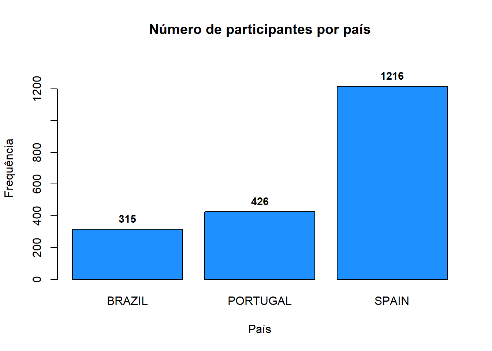
Estatísticas descritivas
Medidas de tendência central e de dispersão
A descrição dos dados geralmente é realizada pelas seguintes estatísticas: Média, desvio padrão, mediana, amplitude, mínimo, máximo, assimetria e curtose. Algumas dessas análises (média, desvio padrão e mediana) informam sobre o ponto central da distribuição das medidas. Outras, como o desvio padrão, a amplitude, a assimetria e a curtose informam sobre a forma como os valores se afastam do ponto central.
Aqui, é importante atentar para a distribuição normal, cujas características são apresentadas na Figura abaixo.
Medidas de tendência central: mean,median
## mean()
mean(dataset$age, na.rm = TRUE)[1] 21.46034## median()
median(dataset$age, na.rm = TRUE)[1] 21Medidas de dispersão: min, max, range, skew, kurtosi, sd
## min()
min(dataset$age, na.rm = TRUE)[1] 17## max()
max(dataset$age, na.rm = TRUE)[1] 68## range()
range(dataset$age, na.rm = TRUE)[1] 17 68## skewness()
# moments::skewness(dataset$age, na.rm = TRUE) # pacote moments
skew(dataset$age, na.rm = TRUE) # pacote psych[1] 5.014931## kurtosis()
# moments::kurtosis(dataset$age, na.rm = TRUE) # pacote moments
kurtosi(dataset$age, na.rm = TRUE) # pacote psych[1] 41.31324## sd()
sd(dataset$age, na.rm = TRUE)[1] 3.828075Funções que sumariam dados
summary {base}
# summary() {base}
dataset %>% select(age) %>% summary() age
Min. :17.00
1st Qu.:19.00
Median :21.00
Mean :21.46
3rd Qu.:22.00
Max. :68.00
NAs :28 summarise {tidyverse}
# summarise() {tidyverse}
dataset %>%
drop_na(sex,age,bai_sum,bdi_sum) %>%
group_by(sex) %>%
summarise(idade = mean(age),
BAI = mean(bai_sum),
BDI = mean(bdi_sum)) %>% kable()| sex | idade | BAI | BDI |
|---|---|---|---|
| F | 21.55112 | 9.520366 | 9.606816 |
| M | 21.30490 | 6.707692 | 8.618182 |
describe e describeBy {psych}
# describe() {psych}
describe(dataset$age, na.rm = TRUE) %>% kable()| vars | n | mean | sd | median | trimmed | mad | min | max | range | skew | kurtosis | se | |
|---|---|---|---|---|---|---|---|---|---|---|---|---|---|
| X1 | 1 | 1929 | 21.46034 | 3.828075 | 21 | 20.93528 | 2.9652 | 17 | 68 | 51 | 5.014931 | 41.31324 | 0.0871594 |
describe(dataset$age, na.rm = TRUE) %>% select(n,mean,sd) %>% kable()| n | mean | sd | |
|---|---|---|---|
| X1 | 1929 | 21.46034 | 3.828075 |
dataset %>% select(age,bai_sum,bdi_sum) %>% describe(na.rm = TRUE) %>% kable()| vars | n | mean | sd | median | trimmed | mad | min | max | range | skew | kurtosis | se | |
|---|---|---|---|---|---|---|---|---|---|---|---|---|---|
| age | 1 | 1929 | 21.460342 | 3.828075 | 21 | 20.935275 | 2.9652 | 17 | 68 | 51 | 5.014931 | 41.313241 | 0.0871594 |
| bai_sum | 2 | 1952 | 8.484631 | 8.113986 | 6 | 7.190141 | 5.9304 | 0 | 48 | 48 | 1.705854 | 3.476144 | 0.1836514 |
| bdi_sum | 3 | 1949 | 9.229348 | 7.735969 | 8 | 8.182575 | 5.9304 | 0 | 57 | 57 | 1.624164 | 4.112384 | 0.1752301 |
# describeBy
describeBy(bai_sum ~ country,
data = dataset)
Descriptive statistics by group
country: BRAZIL
vars n mean sd median trimmed mad min max range skew kurtosis se
bai_sum 1 315 9.01 8.4 6 7.75 5.93 0 46 46 1.64 3.31 0.47
------------------------------------------------------------
country: PORTUGAL
vars n mean sd median trimmed mad min max range skew kurtosis se
bai_sum 1 424 7.92 8.04 5 6.56 5.93 0 45 45 1.82 3.87 0.39
------------------------------------------------------------
country: SPAIN
vars n mean sd median trimmed mad min max range skew kurtosis
bai_sum 1 1213 8.55 8.06 6 7.27 5.93 0 48 48 1.68 3.38
se
bai_sum 0.23## Com mais de uma variável dependente
describeBy(bai_sum + bdi_sum ~ country, data = dataset)
Descriptive statistics by group
country: BRAZIL
vars n mean sd median trimmed mad min max range skew kurtosis
bai_sum 1 315 9.01 8.40 6.0 7.75 5.93 0 46 46 1.64 3.31
bdi_sum 2 314 10.89 8.29 9.5 9.97 8.15 0 41 41 1.01 0.80
se
bai_sum 0.47
bdi_sum 0.47
------------------------------------------------------------
country: PORTUGAL
vars n mean sd median trimmed mad min max range skew kurtosis se
bai_sum 1 424 7.92 8.04 5 6.56 5.93 0 45 45 1.82 3.87 0.39
bdi_sum 2 423 9.05 7.73 7 8.00 5.93 0 53 53 1.76 5.11 0.38
------------------------------------------------------------
country: SPAIN
vars n mean sd median trimmed mad min max range skew kurtosis
bai_sum 1 1213 8.55 8.06 6 7.27 5.93 0 48 48 1.68 3.38
bdi_sum 2 1212 8.86 7.54 7 7.83 5.93 0 57 57 1.77 5.12
se
bai_sum 0.23
bdi_sum 0.22Dica: vejam também a função tableby, do pacote arsenal, para produzir tabelas descritivas.
Representação gráfica
Gráficos de linhas
# Extrair as médias de cada país
medias_bai <- c(9.01, 7.92, 8.55) # BRAZIL, PORTUGAL, SPAIN
medias_bdi <- c(10.89, 9.05, 8.86)
paises <- c("Brazil", "Portugal", "Spain")
# Gráfico base com a linha do BAI
plot(1:3, # posições no eixo x
medias_bai,
type = "o", # linha + pontos
col = "red",
lwd = 2, # espessura da linha
pch = 16, # tipo de ponto (círculo preenchido)
cex = 1.5, # tamanho do ponto
ylim = c(0, 12), # Escala do eixo y
xlab = "País",
ylab = "Média",
main = "Médias de Ansiedade e Depressão por País",
xaxt = "n") # suprime o eixo x automático
# Adicionar os nomes dos países no eixo x
axis(1, at = 1:3, labels = paises)
# Adicionar a linha do BDI
lines(1:3,
medias_bdi,
type = "o",
col = "blue",
lwd = 2,
pch = 16,
cex = 1.5) # tamanho do ponto
# Adicionar legenda
legend("bottomright", # Posição da legenda ("topright")
legend = c("Ansiedade (BAI)",
"Depressão (BDI)"),
col = c("red", "blue"),
lwd = 1, # espessura da linha
pch = 16, # tipo de ponto
bty = "n") # sem borda na legenda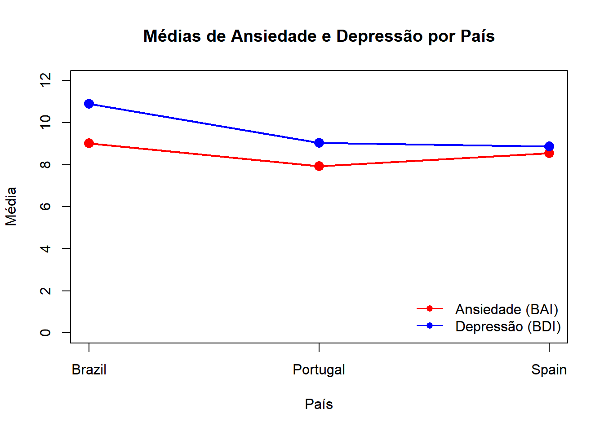
Boxplot
# Organizar os dados em uma lista
dados_box <- list(
"Ansiedade (BAI)" = dataset$bai_sum,
"Depressão (BDI)" = dataset$bdi_sum)
# Boxplot
boxplot(dados_box,
col = c("red", "blue"), # cor de preenchimento
border = "black", # cor da borda
main = "Distribuição de Ansiedade e Depressão",
ylab = "Pontuação", # Rótulo do eixo y
xlab = "", # Rótulo do eixo x (vazio)
notch = FALSE, # TRUE adiciona um entalhe na mediana
outline = TRUE, # FALSE oculta os outliers
lwd = 1.5) # espessura das bordas
# Adicionar linha da mediana com valor
mediana_bai <- median(dataset$bai_sum, na.rm = TRUE)
mediana_bdi <- median(dataset$bdi_sum, na.rm = TRUE)
text(x = c(1, 2),
y = c(mediana_bai, mediana_bdi),
labels = c(mediana_bai, mediana_bdi),
pos = 3, # posição acima do ponto
cex = 0.9,
font = 2) # negrito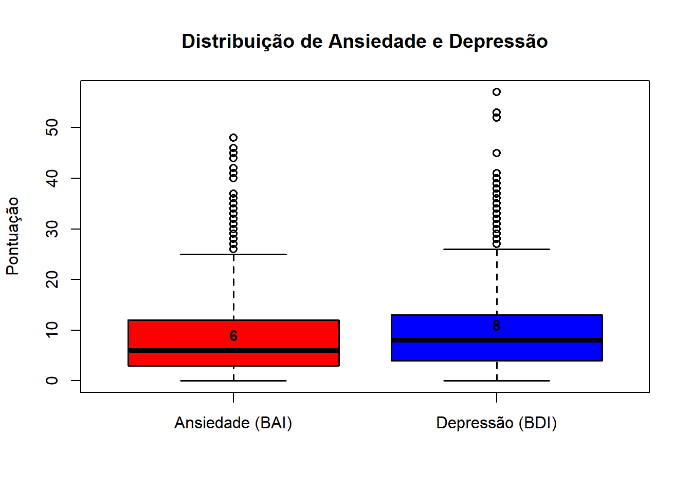
Dica: procurem saber como fazer gráficos utilizando o ggplot2, um pacote da família tidyverse. Aqui tem uma playlist (vídeos) interessante e bem didática sobre esse assunto.
Análises de associação entre variáveis
Muitas vezes, o pesquisador está interessado no estudo ou análise de relações entre variáveis. Nesses casos, ele recorrerá a estatísticas como o teste de qui-quadrado (caso tenha variáveis do tipo nominal ou categórica), coeficiente de correlação de Pearson ou regressão linear, entre outras, quando as variáveis forem contínuas.
Testes de Qui-Quadrado
O teste de qui-quadrado é uma medida de associação entre variáveis categóricas, das quais só temos a frequência de ocorrência. Exide aderência: quando se deseja verificar as distribuições de probabilidades de cada categoria de uma variável em relação a um valor teórico esperado.
de homogeneidade: quandstem três tipos de testes de qui-quadrado:
- o se deseja verificar se as distribuições das categorias são as mesmas para diferentes subpopulações de interesse.
de independência: verficiar se duas variáveis categóricas são independentes
Neste caso, vamos fazer uma análise de qui-quadrado de independência, a mais comumumente utilizada, com o objetivo de verificar se as pessoas estão distribuídas equitativamente pelos países quanto aos sexos masculino e feminino.
O primeiro passo para isso é montar uma tabela de contingência.
Tabela de Contingência
Nesse caso, vamos usar a função da base table() para gerar uma tabela 2 x 3, duas linhas e três colunas, em que as linhas representarão os sexos masculino e feminino, e as colunas representarão os países: Brasil, Portugal e Espanha. A hipótese nula é a de que NÃO HÁ diferenças estatisticamente significativas na distribuição de homens e mulheres dentro dos países.
tabcont_sex_country <- table(dataset$sex, # linhas
dataset$country) # colunasO próximo passo é realizar a análise de qui-quadrado em si.
Análise de qui-quadrado.
# É bom salvá-la em um objeto porque tem mais informações do que as que são mostradas na análise.
# options(scipen = 999) # função para tirar a notação científica de potência.
# Qui-quadrado
chi_sex_country <- chisq.test(tabcont_sex_country)
chi_sex_country
Pearson's Chi-squared test
data: tabcont_sex_country
X-squared = 48.458, df = 2, p-value = 3.003e-11# chi_sex_country$expected %>% round(digits = 0)
# chi_sex_country$observed
# options(scipen = 0)Nesse caso, o X2 foi de 48,458, para 2 graus de liberdade, e o valor de p foi igual a 3.003e-11 (lê-se 3.003 x 10-11). Ou seja, o qui-quadrado foi estatisticamente significativo, indicando que os participantes dos sexos masculino e feminino não foram distribuídos homogeneamente dentro dos países, rejeitando-se a hipótese nula. Isso poderia ser relatado da seguinte forma:
Relato: Foi realizado um teste qui-quadrado de independência para verificar se a distribuição dos sexos masculino e feminino foi homogênea entre os participantes dos três países (Brasil, Portugal e Espanha). Os resultados indicaram associação estatisticamente significativa entre sexo e país (χ²(2) = 48,46; p < 0,001), sugerindo a rejeição da hipótese nula, pois a distribuição dos sexos não foi homogênea entre os países. A inspeção da tabela de contingência revelou que essa heterogeneidade se deve principalmente à amostra espanhola, que apresentou proporção de mulheres consideravelmente superior à de homens, enquanto Brasil e Portugal apresentaram distribuições mais equilibradas entre os sexos.
Representação em tabela
dataset %>%
drop_na(sex) %>%
group_by(sex) %>%
count(country) %>%
mutate("%" = n*100/sum(n)) %>%
kable()| sex | country | n | % |
|---|---|---|---|
| F | BRAZIL | 166 | 13.67381 |
| F | PORTUGAL | 223 | 18.36903 |
| F | SPAIN | 825 | 67.95717 |
| M | BRAZIL | 149 | 20.24457 |
| M | PORTUGAL | 203 | 27.58152 |
| M | SPAIN | 384 | 52.17391 |
Pode-se observar que as distribuições de Brasil e Portugal são muito próximas, mas a da Espanha é bastante diferente, o que deve estar produzindo a significância estatística da distribuição.
Representação gráfica
# Tabela de contingência (já existe no seu script)
tabcont_sex_country <- table(dataset$sex, dataset$country)
# Gráfico de barras agrupadas
barplot(tabcont_sex_country,
beside = TRUE, # TRUE = barras lado a lado; FALSE = empilhadas
col = c("#656d4a", "#936639"),
border = "black",
main = "Distribuição de Sexo por País",
xlab = "País",
ylab = "Frequência",
legend.text = c("Feminino", "Masculino"),
args.legend = list(
x = "topleft",
bty = "n", # sem borda na legenda
title = "Sexo"))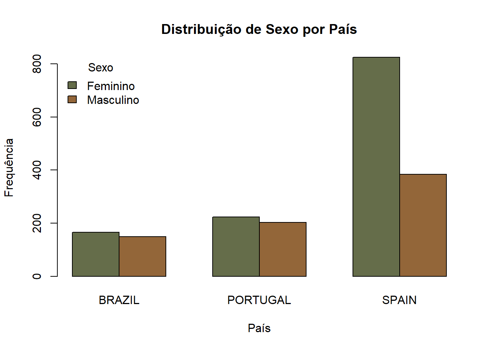
Coeficientes de correlação: Pearson, Spearman e Kendall
Quando o interesse do pesquisador é investigar o grau de associação entre variáveis, ele pode empregar o Coeficiente de Correlação de Pearson. Os resultados dessa análise podem variar de -1 a 1. Resultados positivos revelam associação diretamente proporcional entre as variáveis, resultados negativos revelam associação inversamente proporcional entre as variáveis e resultados próximos de zero indicam que não há associação entre as variáveis.
Quando os dados apresentam distribuição normal, usamos o coeficiente de correlação de Pearson. Para dados que não apresentam essa distribuição, usamos a correlação de Kendal ou Spearman. Para isso, vamos usar a função corrplot() do pacote corrplot. Portanto, é necessário instalar ( install.packages("corrplot")) e ativar library(corrplot) esse pacote.
Matriz de correlações
# matriz completa (correlações entre todas as variáveis)
matriz_comp <- corr.test(dataset[,c(3,89,92)])
matriz_comp <- corr.test(dataset[,c('age',"bai_sum","bdi_sum")])
## Visualização dos resultados
matriz_compCall:corr.test(x = dataset[, c("age", "bai_sum", "bdi_sum")])
Correlation matrix
age bai_sum bdi_sum
age 1.00 -0.04 -0.02
bai_sum -0.04 1.00 0.60
bdi_sum -0.02 0.60 1.00
Sample Size
age bai_sum bdi_sum
age 1929 1924 1922
bai_sum 1924 1952 1948
bdi_sum 1922 1948 1949
Probability values (Entries above the diagonal are adjusted for multiple tests.)
age bai_sum bdi_sum
age 0.00 0.11 0.43
bai_sum 0.06 0.00 0.00
bdi_sum 0.43 0.00 0.00
To see confidence intervals of the correlations, print with the short=FALSE option## Visualização somente das correlações
matriz_comp$r age bai_sum bdi_sum
age 1.00000000 -0.04334112 -0.01805132
bai_sum -0.04334112 1.00000000 0.59994091
bdi_sum -0.01805132 0.59994091 1.00000000round(matriz_comp$r,digits = 2) age bai_sum bdi_sum
age 1.00 -0.04 -0.02
bai_sum -0.04 1.00 0.60
bdi_sum -0.02 0.60 1.00matriz_comp$n age bai_sum bdi_sum
age 1929 1924 1922
bai_sum 1924 1952 1948
bdi_sum 1922 1948 1949matriz_comp$p age bai_sum bdi_sum
age 0.0000000 1.146702e-01 4.289845e-01
bai_sum 0.0573351 0.000000e+00 2.605288e-190
bdi_sum 0.4289845 8.684295e-191 0.000000e+00# matriz de correlações de ansiedade/depressão com idade
matriz_cruz <- corr.test(dataset[,c(89,92)], dataset[,3], method = "pearson")
## Visualização dos resultados
matriz_cruzCall:corr.test(x = dataset[, c(89, 92)], y = dataset[, 3], method = "pearson")
Correlation matrix
[,1]
bdi_sum -0.02
bai_sum -0.04
Sample Size
[,1]
bdi_sum 1922
bai_sum 1924
These are the unadjusted probability values.
The probability values adjusted for multiple tests are in the p.adj object.
[,1]
bdi_sum 0.43
bai_sum 0.06
To see confidence intervals of the correlations, print with the short=FALSE option## Visualização somente das correlações
matriz_cruz$r [,1]
bdi_sum -0.01805132
bai_sum -0.04334112matriz_cruz$stars %>% kable()| bdi_sum | -0.02 |
| bai_sum | -0.04 |
round(matriz_cruz$r, digits = 2) %>% kable()| bdi_sum | -0.02 |
| bai_sum | -0.04 |
Os resultados são apresentados em três matrizes. A primeira com os coeficientes de correlação, a segunda com o número de participantes empregado para o cálculo dos coeficientes, e a terceira com os p-values. Para um coeficiente de correlação ser estatisticamente significativo, o p-value deve ser menor que 0,05, pois isso indica que o valor do coeficiente de correlação obtido seria muito raro em um banco de dados aleatórios.
Na matriz completa, nota-se que as correlações de bdi_sum e bai_sum com idade foram próximas de zero e com p-vlaues de 0,43 e 0,06, respectivamente, indicando que não há associação entre de ansiedade e depressão com idade. Mas a correlação entre bdi_sum e bai_sum foi de 0,60 com p-value igual a 0,00 (nesses casos, relata-se p < 0,01). Exemplo de relato:
Observou-se que houve correlação positiva e estatisticamente significativa entre ansiedade e depressão (r = 0,60; p < 0,01) e correlações negativas e não significativas de ansiedade (r = -0,04; p = 0,06) e depressão (r = -0.02, p = 0,43) com idade.
Representação gráfica de correlações
plot(x = dataset$bdi_sum,
y = dataset$bai_sum,
col = "black",
pch = 16, # tipo de ponto
cex = 0.7, # tamanho do ponto
main = "Correlação entre Depressão e Ansiedade",
xlab = "Depressão (BDI)",
ylab = "Ansiedade (BAI)")
# Adicionar linha de regressão
abline(lm(bai_sum ~ bdi_sum,
data = dataset,
na.action = na.omit),
col = "black",
lwd = 2)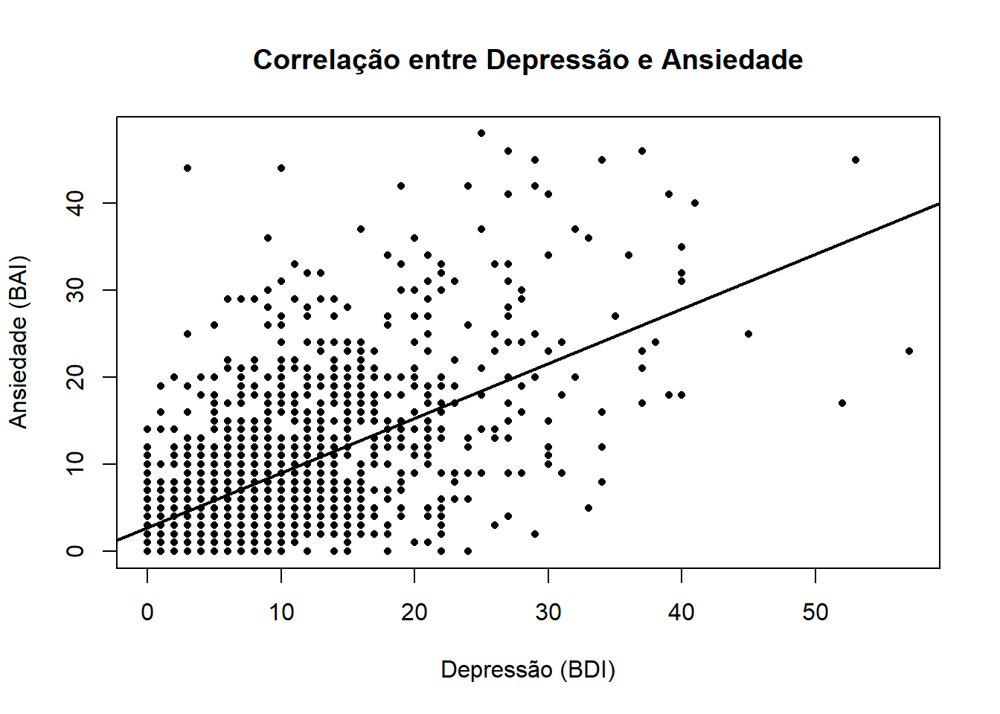
Correlação parcial com a função pcor.test {ppcor}
# Correlação parcial
## Primeiro passo instalar o pacote ppcor
options(repos = c(CRAN = "https://cloud.r-project.org"))# library(ppcor)
## Selecionar variáveis e eliminar missing values
partial_matrix <-
dataset %>% # criar objeto partial_matrix
dplyr::select(bai_sum,bdi_sum,age) %>% # selecionar variáveis
drop_na() # eliminar linhas com NA
## Calcular a correlação bivariada sem parcialização
cor.test(partial_matrix$bai_sum,
partial_matrix$bdi_sum)
Pearson's product-moment correlation
data: partial_matrix$bai_sum and partial_matrix$bdi_sum
t = 33.142, df = 1919, p-value < 2.2e-16
alternative hypothesis: true correlation is not equal to 0
95 percent confidence interval:
0.5741122 0.6310395
sample estimates:
cor
0.6033439 ## Calcular a correlação parcial
## Colocar as variáveis que se quer correlacionar nos dois primeiros argumentos
## e a que se quer controlar como terceiro argumento.
ppcor::pcor.test(partial_matrix$bai_sum,
partial_matrix$bdi_sum,
partial_matrix$age) estimate p.value statistic n gp Method
1 0.60322 1.194674e-190 33.12292 1921 1 pearson## OBS.: O terceiro argumento aceita mais de uma variável. Por exemplo...
## Correlação entre extr e neur, controlando cons, amab e aber...
# Passo 1: selecionar as variáveis e eliminar NAs
partial_bf <- big_five %>%
dplyr::select(extr, neur, cons, amab, aber) %>%
drop_na()
## Passo 2: correlação parcial controlando cons, amab e aber
ppcor::pcor.test(partial_bf$extr, # variável 1
partial_bf$neur, # variável 2
partial_bf[, c("cons", # variáveis de controle
"amab",
"aber")]) # eliminar missing values estimate p.value statistic n gp Method
1 -0.07333616 6.308513e-25 -10.32468 19719 3 pearson## Comparar com correlação sem parcialização
cor.test(big_five$extr,big_five$neur)
Pearson's product-moment correlation
data: big_five$extr and big_five$neur
t = -0.079516, df = 19717, p-value = 0.9366
alternative hypothesis: true correlation is not equal to 0
95 percent confidence interval:
-0.01452376 0.01339142
sample estimates:
cor
-0.0005662811 # comando para fechar o pacote ppcor, que tem um pacote associado (MASS), cuja função select conflita com o select do pacote tidyverse.
# detach("package:ppcor", unload = TRUE)
# detach("package:MASS", unload = TRUE)Exercício - correlação
- Abra o RStudio e entre no projeto que você está utilizando para a disciplina.
- Importe o banco de dados fictício correlation_test.csv executando o script abaixo.
link_correlation_test <- "https://github.com/jmhbueno/arquivos_aulas/raw/main/correlation_test.csv"
## Importa o arquivo do github para o computador (fora do R)
download.file(
url = link_correlation_test,
destfile = "correlation_test.csv",
mode = "wb")- Agora, você deve ter o arquivo
correlation_test.csvno seu computador, na pasta que está utilizando o R. - Importe esse arquivo para dentro do R, salvando como correlation_test.
- Verifique o que há dentro do dataframe.
- Você deve encontrar três variáveis: inteligência (intelig), memória de trabalho (memtrab) e notas escolares (notaesc).
- Calcule a correlação simples (função
corr.testdo pacote psych) entre inteligência e notas escolares. Anote o valor da correlação, o número de participantes que gerou o resultado, e o valor de p. - Agora, calcule a correlação parcial (função
pcor.testdo pacoteppcor) entre inteligência e notas escolares, controlando memória de trabalho. - Compare os coeficientes de correlação obtidos e explique o que ocorreu.
Regressão Linear Simples e Múltipla
A análise de regressão linear avança em relação ao coeficiente de correlação, por estabelecer QUANTO uma variável varia em função de outra. Por exemplo, é possível predizer ansiedade a partir da depressão? Quanto a ansiedade varia em função da depressão?
Então, nesse caso, teremos a ansiedade como variável dependente (aquela que se quer prever) e a depressão como independente (aquela que será a preditora). Para verificar isso, usaremos a função lm() do pacote stats da base do R. LM são as iniciais de linear model.
mod_ans_dep <- lm( # lm é a função linear model
data = dataset, # onde estão os dados
bai_sum ~ bdi_sum, # depressão predizendo ansiedade
na.action = na.omit) # comando para ignorar NAs
# OBS.: Estamos salvando os resultados do modelo no objeto mod_ans_dep.
# Para ver o resultado, podemos usar a função summary()
summary(mod_ans_dep)
Call:
lm(formula = bai_sum ~ bdi_sum, data = dataset, na.action = na.omit)
Residuals:
Min 1Q Median 3Q Max
-18.939 -3.881 -1.210 2.678 39.419
Coefficients:
Estimate Std. Error t value Pr(>|t|)
(Intercept) 2.69295 0.22905 11.76 <2e-16 ***
bdi_sum 0.62919 0.01902 33.08 <2e-16 ***
---
Signif. codes: 0 '***' 0.001 '**' 0.01 '*' 0.05 '.' 0.1 ' ' 1
Residual standard error: 6.494 on 1946 degrees of freedom
(9 observations deleted due to missingness)
Multiple R-squared: 0.3599, Adjusted R-squared: 0.3596
F-statistic: 1094 on 1 and 1946 DF, p-value: < 2.2e-16Há três tipos de resultados importantes na saída desta análise:
- F-statistic: 1094 on 1 and 1946 DF, p-value: < 2.2e-16
Essa é a última linha dos resultados, mas a primeira a ser observada. A estatística F verifica se a associação entre as duas variáveis consideradas (ansiedade e depressão) é significativamente diferente da associação entre duas variáveis aleatórias (cuja correlação costuma ser muito próxima de zero). Portanto, se a estatística F for estatisticamente significativa (p-value < 0,05), isso indica que pode ser possível descrever a variação de uma variável (ansiedade) em função da outra (depressão), porque provavelmente há associação entre ansiedade e depressão.
- Multiple R-squared: 0.3599, Adjusted R-squared: 0.3596
Indica a % de variância de ansiedade (variação entre as pessoas) que é explicada pela variância de depressão. Há dois índices, o R-quadrado e o R-quadrado ajustado. O segundo é ajustado para o número de variáveis preditoras que há no modelo e é mais adequado que o R-quadrado.
Nesse caso, utilizando o R-quadrado ajustado, o resultado indica que 35,96% da variância de ansiedade é explicada pela variância de depressão.
- Os coeficientes de regressão
Os coeficientes são os valores que entram na equação: \(y_i = \alpha + \beta x_i + e_i\)
Nesse caso, o \(\alpha = 2,69295\) (intercepto) e \(\beta = 0,62919\) . Isso indica que, para predizer a pontuação em ansiedade do sujeito i, basta pegar sua pontuação em depressão, multiplicar por 0,62919 e somar 2,69295 e o erro de estimação desse sujeito (diferença entre o predito e o real). Nota-se que o p-valor de bdi_sum foi estatísticamente significativo, com p = 2 . 10-16 , indicando que a cada ponto que depressão sobre, a ansiedade sobre 0,62919 pontos.
Exemplo de relato dos resultados: A análise de regressão linear simples indicou que os escores de depressão, avaliados pelo Inventário de Depressão de Beck (BDI), predizem significativamente os níveis de ansiedade mensurados pelo Inventário de Ansiedade de Beck (BAI), F(1, 1946) = 1094.00, p < .001. O modelo explicou aproximadamente 36% da variância nos escores de ansiedade (R² = .36), indicando um efeito de magnitude substancial. Observou-se uma associação positiva entre as variáveis, de modo que, a cada aumento de um ponto nos escores de depressão, estima-se um incremento médio de 0,63 ponto nos escores de ansiedade (β = 0.63, p < .001), sugerindo que níveis mais elevados de sintomas depressivos estão associados a maiores níveis de sintomas ansiosos.
Essa análise poderia ser representada graficamente, já que envolve apenas duas variáveis:
plot(
x = dataset$bdi_sum,
y = dataset$bai_sum,
type = "p",
pch = 16,
main = "Depressão x Ansiedade",
xlab = "Depressão",
ylab = "Ansiedade"
)
mod_ans_dep <- lm( # lm é a função linear model
data = dataset, # onde estão os dados
bai_sum ~ bdi_sum, # depressão predizendo ansiedade
na.action = na.omit)
abline(mod_ans_dep, lwd = 2, col = "red")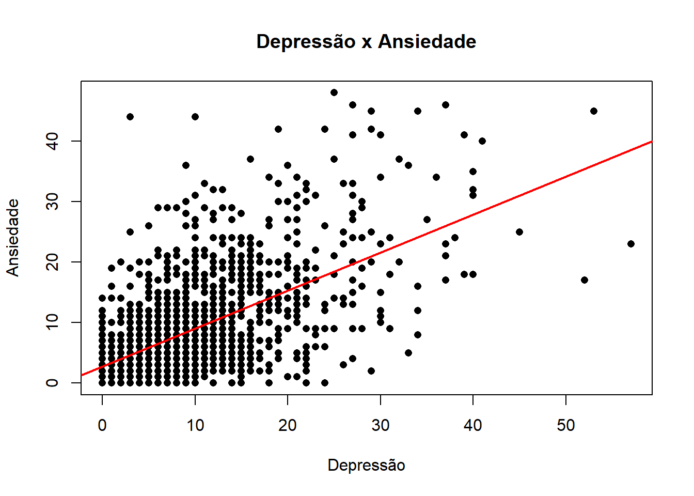
A análise de regressão linear múltipla, é muito semelhante à simples. Apenas envolve mais de uma variável independente. Vamos ver isso, com um novo banco de dados (fictício), chamado dados.
O banco de dados dados consiste em uma base fictícia, simulada para fins didáticos, contendo informações de participantes em nove variáveis contínuas: desempenho escolar, inteligência emocional, inteligência fluída, inteligência cristalizada, extroversão, amabilidade, conscienciosidade, neuroticismo e abertura à experiência. A estrutura correlacional entre essas variáveis foi definida com base em associações teóricas previamente especificadas, de modo a representar um cenário plausível de investigação em psicologia. O objetivo da análise é examinar, por meio de regressão múltipla, em que medida as variáveis cognitivas, emocionais e de personalidade contribuem para a predição do desempenho escolar.
# Regressão múltipla
modelo_reg <- lm(
desc ~ inte + intf + intc + extr + amab + cons + neur + aber,
data = dados
)
# Resumo dos resultados
summary(modelo_reg)
Call:
lm(formula = desc ~ inte + intf + intc + extr + amab + cons +
neur + aber, data = dados)
Residuals:
Min 1Q Median 3Q Max
-2.36132 -0.50108 0.00018 0.50583 2.59942
Coefficients:
Estimate Std. Error t value Pr(>|t|)
(Intercept) 4.780e-17 2.694e-02 0.000 1.00000
inte 1.711e-02 3.031e-02 0.564 0.57258
intf 2.842e-01 3.070e-02 9.255 < 2e-16 ***
intc 4.364e-01 3.236e-02 13.484 < 2e-16 ***
extr -1.963e-02 2.882e-02 -0.681 0.49597
amab 1.526e-02 2.861e-02 0.534 0.59380
cons 2.322e-01 2.883e-02 8.056 2.89e-15 ***
neur -5.426e-02 2.967e-02 -1.829 0.06779 .
aber -9.877e-02 3.007e-02 -3.284 0.00107 **
---
Signif. codes: 0 '***' 0.001 '**' 0.01 '*' 0.05 '.' 0.1 ' ' 1
Residual standard error: 0.7621 on 791 degrees of freedom
Multiple R-squared: 0.425, Adjusted R-squared: 0.4192
F-statistic: 73.1 on 8 and 791 DF, p-value: < 2.2e-16Relato dos resultados: A análise de regressão múltipla indicou que o modelo foi estatisticamente significativo, F(8, 791) = 73.10, p < .001, explicando aproximadamente 41,9% da variância no desempenho escolar (R² ajustado = .419). Entre os preditores incluídos no modelo, inteligência fluída (β = .28, p < .001), inteligência cristalizada (β = .44, p < .001), conscienciosidade (β = .23, p < .001) e abertura à experiência (β = −.10, p = .001) apresentaram contribuições estatisticamente significativas para a predição do desempenho escolar.
De forma mais detalhada:
Esses resultados indicam que, considerando simultaneamente todas as variáveis incluídas no modelo, algumas delas contribuíram de forma independente para explicar diferenças no desempenho escolar.
O teste global da regressão (F(8, 791) = 73.10, p < .001) mostra que o conjunto de preditores explica o desempenho escolar de maneira significativamente melhor do que um modelo sem preditores. Ou seja, há evidências de que parte importante da variabilidade no desempenho acadêmico está associada às variáveis cognitivas, emocionais e de personalidade incluídas na análise.
O R² ajustado de .419 indica que aproximadamente 41,9% da variância do desempenho escolar foi explicada pelo modelo, o que representa uma proporção substantiva da variabilidade observada.
Quanto aos preditores específicos, os coeficientes representam o efeito único de cada variável sobre o desempenho escolar, mantendo constantes todas as demais. Como os dados foram simulados em escala padronizada (média zero e desvio-padrão igual a 1), os coeficientes podem ser interpretados em unidades de desvio-padrão.
Inteligência fluída (β = .28): indica que, para cada aumento de 1 desvio-padrão em inteligência fluída, espera-se um aumento médio de 0,28 desvio-padrão no desempenho escolar, mantendo constantes os demais preditores. Isso sugere que a capacidade de raciocínio abstrato e resolução de problemas novos contribui positivamente para o rendimento acadêmico.
Inteligência cristalizada (β = .44): foi o preditor mais forte. Isso significa que, para cada aumento de 1 desvio-padrão nessa variável, espera-se um incremento médio de 0,44 desvio-padrão no desempenho escolar. Em termos substantivos, conhecimentos acumulados e repertório cognitivo previamente adquirido parecem exercer influência particularmente relevante sobre o desempenho acadêmico.
Conscienciosidade (β = .23): indica que, para cada aumento de 1 desvio-padrão em conscienciosidade, o desempenho escolar tende a aumentar, em média, 0,23 desvio-padrão, controlando as demais variáveis. Isso sugere que características como organização, disciplina e persistência favorecem melhor rendimento escolar.
Abertura à experiência (β = −.10): indica que, para cada aumento de 1 desvio-padrão em abertura, espera-se uma redução média de 0,10 desvio-padrão no desempenho escolar, após o controle das demais variáveis. Embora estatisticamente significativo, esse efeito é pequeno e deve ser interpretado com cautela, pois pode refletir efeitos de supressão estatística decorrentes da correlação entre abertura e variáveis cognitivas.
As variáveis inteligência emocional, extroversão, amabilidade e neuroticismo não apresentaram efeitos estatisticamente significativos, indicando que, neste modelo, não explicaram variância adicional única no desempenho escolar após o controle dos demais preditores.
Em síntese, os resultados sugerem que o desempenho escolar é explicado principalmente por habilidades cognitivas, especialmente inteligência cristalizada e fluída, seguidas por características de autorregulação comportamental, como a conscienciosidade.
Exercício - Regressão
Execute o script a seguir para obter o arquivo bsq_eat.csv em seu computador. OBS.: Você deve rodar esse script no RStudio, após você ter aberto o projeto (open project) que você está utilizando para a disciplina.
link_regression_test <- "https://github.com/jmhbueno/arquivos_aulas/raw/main/bsq_eat.csv"
## Importa o arquivo do github para o computador (fora do R)
download.file(
url = link_regression_test,
destfile = "bsq_eat.csv",
mode = "wb")Verifique, no quadrante inferior direito, aba “Files”, se o arquivo bsq_eat.csv foi salvo no seu computador.
Importe esse arquivo para dentro do RStudio, salvando-o como dataframe bsq_eat
Nesse arquivo há diversas variáveis, dentre as quais temos: eat_soma (comportamentos alimentares disfuncionais), bsq_soma (distorção da imagem corporal) e imc (índice de massa corporal).
Uma hipótese plausível a ser testada é que maiores níveis de insatisfação ou distorção da imagem corporal, bem como maior índice de massa corporal (IMC), estejam associados a comportamentos alimentares mais disfuncionais, especialmente maior tendência à restrição alimentar. Em termos analíticos, isso pode ser investigado por meio de uma regressão múltipla, na qual a variável dependente será a pontuação total no EAT (eat_soma), interpretada como indicador de comportamentos alimentares de risco, enquanto a percepção da imagem corporal (bsq_soma) e o IMC (imc) serão incluídos como variáveis preditoras. O estudo original utilizou estratégia semelhante para examinar relações preditivas entre essas variáveis.
Exercícios sobre qui-quadrado
Dica: para que as categorias de ansiedade e depressão sejam mostradas em ordem crescente (mínima, leve, moderada, grave), é necessário informar o R sobre isso por meio do argumento levels da função factor.
- Calcular o qui-quadrado para verificar as associações entre sexo e ansiedade (bai_class). Represente os dados em uma tabela.
code
library(janitor)
Anexando pacote: 'janitor'Os seguintes objetos são mascarados por 'package:stats':
chisq.test, fisher.testcode
# padronizar a ordem dos níveis: minima, leve, moderada, grave.
dataset$bai_class <- factor(dataset$bai_class,
levels = c("minima",
"leve",
"moderada",
"grave"))
# Cálculo do qui-quadrado
chisq.test( # função para cálculo do qui-quadrado
table(dataset$bai_class, dataset$sex)) # tabulação dos dados
Pearson's Chi-squared test
data: table(dataset$bai_class, dataset$sex)
X-squared = 44.767, df = 3, p-value = 1.037e-09code
# Representação dos dados em tabela
dataset %>%
tabyl(bai_class,sex,show_na = FALSE) %>% # função de tabulação do janitor
adorn_totals(c("row","col")) %>% # adiciona o N
adorn_percentages("col") %>% # adiciona porcentagens (One of "row", "col", or "all".)
adorn_pct_formatting(
rounding = "half up", # arredondar do cinco pra cima
digits = 0) %>% # número de casas decimais
adorn_ns() %>% # mostra N e % juntas
pander() # melhora a visualização dos dados.| bai_class | F | M | Total |
|---|---|---|---|
| minima | 66% (797) | 80% (583) | 71% (1,380) |
| leve | 22% (273) | 14% (101) | 19% (374) |
| moderada | 9% (106) | 4% (32) | 7% (138) |
| grave | 3% (38) | 2% (15) | 3% (53) |
| Total | 100% (1,214) | 100% (731) | 100% (1,945) |
O teste de qui-quadrado (X2(gl=3, N=1945) = 44.767, p < 0,001) foi estatisticamente significativo, indicando haver diferenças na distribuição da classificação de ansiedade por sexo. A tabela XX mostra que as mulheres apresentam menor porcentagem de casos de ansiedade mínima, maior porcentagem de casos de ansiedade leve e moderada e praticamente a mesma porcentagem de casos graves.
- Calcular o qui-quadrado para verificar as associações entre sexo e depressão (bdi_class). Represente os dados em uma tabela.
code
dataset$bdi_class <- factor(dataset$bdi_class,
levels = c("minima",
"leve",
"moderada",
"grave"))
chisq.test(table(dataset$bdi_class, dataset$sex))
Pearson's Chi-squared test
data: table(dataset$bdi_class, dataset$sex)
X-squared = 9.022, df = 3, p-value = 0.029code
# Representação dos dados em tabela
dataset %>%
tabyl(bdi_class,sex,show_na = FALSE) %>% # função de tabulação do janitor
adorn_totals(c("row","col")) %>% # adiciona o N
adorn_percentages("col") %>% # adiciona porcentagens (One of "row", "col", or "all".)
adorn_pct_formatting(
rounding = "half up", # arredondar do cinco pra cima
digits = 0) %>% # número de casas decimais
adorn_ns() %>% # mostra N e % juntas
pander() # melhora a visualização dos dados.| bdi_class | F | M | Total |
|---|---|---|---|
| minima | 76% (925) | 81% (593) | 78% (1,518) |
| leve | 13% (160) | 11% (78) | 12% (238) |
| moderada | 8% (93) | 5% (37) | 7% (130) |
| grave | 3% (32) | 3% (24) | 3% (56) |
| Total | 100% (1,210) | 100% (732) | 100% (1,942) |
O teste de qui-quadrado (X2(gl=3, N=1942) = 9.022, p = 0,029) foi estatisticamente significativo, indicando haver diferenças na distribuição da classificação de depressão por sexo. A tabela XX mostra que as mulheres apresentam menor porcentagem de casos de mínima mínima, maior porcentagem de casos de depressão leve e moderada e a mesma porcentagem de casos graves.
- Calcular o qui-quadrado para verificar as associações entre país e ansiedade (bai_class). Represente os dados em um gráfico.
code
# Cálculo do qui-quadrado
chisq.test( # função para cálculo do qui-quadrado
table(dataset$bai_class, dataset$country)) # tabulação dos dados
Pearson's Chi-squared test
data: table(dataset$bai_class, dataset$country)
X-squared = 3.5693, df = 6, p-value = 0.7347code
# Representação dos dados em tabela
dataset %>%
tabyl(bai_class,country,show_na = FALSE) %>% # função de tabulação do janitor
adorn_totals(c("row","col")) %>% # adiciona o N
adorn_percentages("col") %>% # adiciona porcentagens (One of "row", "col", or "all".)
adorn_pct_formatting(
rounding = "half up", # arredondar do cinco pra cima
digits = 0) %>% # número de casas decimais
adorn_ns() %>% # mostra N e % juntas
pander() # melhora a visualização dos dados.| bai_class | BRAZIL | PORTUGAL | SPAIN | Total |
|---|---|---|---|---|
| minima | 67% (212) | 73% (308) | 71% (864) | 71% (1,384) |
| leve | 22% (68) | 18% (78) | 19% (230) | 19% (376) |
| moderada | 8% (26) | 6% (25) | 7% (87) | 7% (138) |
| grave | 3% (9) | 3% (13) | 3% (32) | 3% (54) |
| Total | 100% (315) | 100% (424) | 100% (1,213) | 100% (1,952) |
- Calcular o qui-quadrado para verificar as associações entre país e depressão (bdi_class). Represente os dados em um gráfico.
code
chisq.test(table(dataset$bdi_class, dataset$country))
Pearson's Chi-squared test
data: table(dataset$bdi_class, dataset$country)
X-squared = 21.295, df = 6, p-value = 0.001623code
# Representação dos dados em tabela
dataset %>%
tabyl(bdi_class,
country,
show_na = FALSE) %>% # função de tabulação do janitor
adorn_totals(c("row","col")) %>% # add N
adorn_percentages("col") %>% # add % (One of "row", "col", or "all")
adorn_pct_formatting( # formatação da porcentagem
rounding = "half up", # arredondar do cinco pra cima
digits = 0) %>% # número de casas decimais
adorn_ns() %>% # mostra N e % juntas
pander() # melhora a visualização dos dados.| bdi_class | BRAZIL | PORTUGAL | SPAIN | Total |
|---|---|---|---|---|
| minima | 69% (216) | 79% (334) | 80% (974) | 78% (1,524) |
| leve | 16% (51) | 12% (50) | 11% (138) | 12% (239) |
| moderada | 11% (34) | 6% (27) | 6% (69) | 7% (130) |
| grave | 4% (13) | 3% (12) | 3% (31) | 3% (56) |
| Total | 100% (314) | 100% (423) | 100% (1,212) | 100% (1,949) |
Exercícios sobre correlação
Baixe o banco de dados rwas_us.xlsx, que foi empregado em um estudo sobre autoritarismo conservador, e cole-o no mesmo diretório em que você está salvando seus arquivos para este estudo.Para mais informações sobre as variáveis desse banco de dados, baixe também o arquivo rwas_information.docx.
## Cria um objeto com o endereço (link) onde está o arquivo
link_rwas_us <- "https://github.com/jmhbueno/Arquivos_aulas/raw/main/rwas_us.xlsx"
## Importa o arquivo do github para o computador (fora do R)
download.file(
url = link_rwas_us,
destfile = "rwas_us.xlsx",
mode = "wb")
rwas_us <- # nome atribuído ao dataframe
readxl::read_xlsx( # função da base para importar arquivos csv
"rwas_us.xlsx", # nome do arquivo xlsx
)
## OBS: É necessário que o arquivo csv esteja no diretório de trabalho do R.
## Cria um objeto com o endereço (link) onde está o arquivo
link_rwas_information <-
"https://github.com/jmhbueno/Arquivos_aulas/raw/main/rwas_information.docx"
download.file(
url = link_rwas_information,
destfile = "rwas_information.docx",
mode = "wb")Use esse banco de dados para realizar os exercício abaixo.
- Calcule as correlações (r) e os índices de significância (p) entre os cinco grandes fatores de personalidade (extr, neur, amab, cons e aber).
rwas_us <- readxl::read_xlsx("rwas_us.xlsx")
rwas_us %>% select(extr,neur,amab,cons,aber) %>% corr.test(method = "pearson")Call:corr.test(x = ., method = "pearson")
Correlation matrix
extr neur amab cons aber
extr 1.00 0.08 -0.14 0.04 0.20
neur 0.08 1.00 -0.12 0.10 0.13
amab -0.14 -0.12 1.00 -0.42 -0.10
cons 0.04 0.10 -0.42 1.00 0.00
aber 0.20 0.13 -0.10 0.00 1.00
Sample Size
[1] 676
Probability values (Entries above the diagonal are adjusted for multiple tests.)
extr neur amab cons aber
extr 0.00 0.11 0.00 0.64 0.00
neur 0.04 0.00 0.01 0.04 0.01
amab 0.00 0.00 0.00 0.00 0.04
cons 0.32 0.01 0.00 0.00 0.97
aber 0.00 0.00 0.01 0.97 0.00
To see confidence intervals of the correlations, print with the short=FALSE option- Calcule as correlações (r) e os índices de significância (p) dos cinco grandes fatores de personalidade (extr, neur, amab, cons e aber) com raciocínio verbal (rv) e autoritarismo (auth), mas expresse os resultados com os traços de personalidade nas linhas e o rv e o auth nas colunas.
code
corr.test(rwas_us[,92:96],rwas_us[,c(97,98)])Call:corr.test(x = rwas_us[, 92:96], y = rwas_us[, c(97, 98)])
Correlation matrix
rv auth
extr 0.04 -0.02
neur 0.06 -0.07
amab -0.08 0.07
cons 0.01 0.04
aber 0.02 -0.01
Sample Size
[1] 676
These are the unadjusted probability values.
The probability values adjusted for multiple tests are in the p.adj object.
rv auth
extr 0.35 0.53
neur 0.13 0.06
amab 0.04 0.07
cons 0.73 0.27
aber 0.56 0.70
To see confidence intervals of the correlations, print with the short=FALSE option- Faça um gráfico de pontos para cada par de correlações entre cinco grandes fatores.
code
pairs.panels(rwas_us[,c('extr','neur','amab','cons','aber')])
code
ggplot(rwas_us, aes(x=extr,y=neur)) +
geom_jitter() +
geom_smooth(method = "lm") +
labs(title ="Correlação entre Extroversão e Neuroticismo",
x = "Extroversão",
y = "Neuroticismo") +
theme_classic()`geom_smooth()` using formula = 'y ~ x'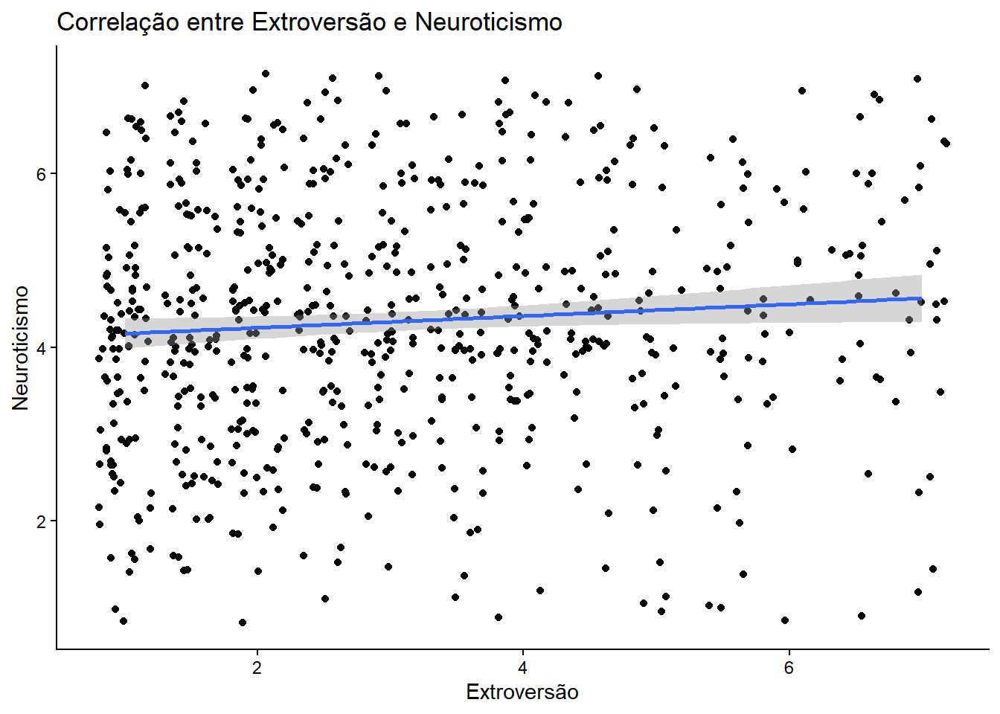
- Faça um gráfico de calor (corrplot) para as correlações entre os cinco grandes fatores.
code
# Em dois passos
## Cálculo das correlações e p-values
matriz_bigfive <- corr.test(rwas_us[,92:96])
## Utilização da matriz de correlações para fazer o gráfico
corrplot::corrplot(matriz_bigfive$r,
order = "original",
type = "lower",
title = "Correlação entre os fatores bif five")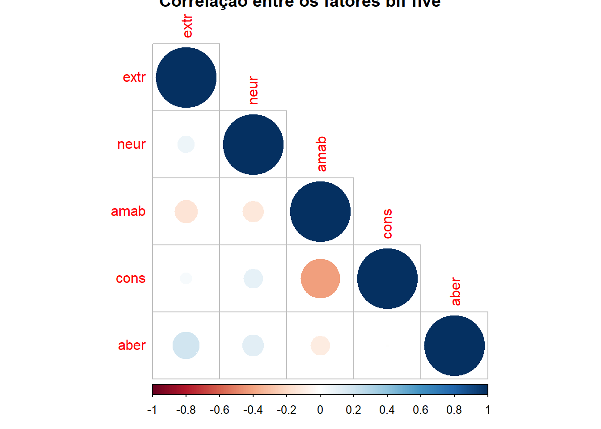
code
### Gráfico em apenas uma etapa
corrplot::corrplot(corr.test(rwas_us[,92:96])$r,
order = "original",
type = "lower",
title = "Correlação entre os fatores bif five")Exercícios sobre regressão linear múltipla
Utilizando o arquivo rwas_us, que já empregamos no exercício anterior, realizar uma análise de regressão para verificar se os traços de personalidade (extr, neur, amab, cons e aber) e o raciocínio verbal (rv) predizem autoritarismo (auth). Interprete os resultados.
code
mod_rwas_us <- lm(auth ~ extr+neur+amab+cons+aber+rv,
data=rwas_us,
na.action = na.omit)
summary(mod_rwas_us)
Call:
lm(formula = auth ~ extr + neur + amab + cons + aber + rv, data = rwas_us,
na.action = na.omit)
Residuals:
Min 1Q Median 3Q Max
-95.891 -5.655 -0.403 5.222 50.855
Coefficients:
Estimate Std. Error t value Pr(>|t|)
(Intercept) 109.84845 4.04749 27.140 < 2e-16 ***
extr -0.03491 0.26486 -0.132 0.8952
neur -0.48062 0.30844 -1.558 0.1197
amab 0.58061 0.29487 1.969 0.0494 *
cons 0.65888 0.31951 2.062 0.0396 *
aber 0.06104 0.36303 0.168 0.8665
rv -1.06862 0.21471 -4.977 8.22e-07 ***
---
Signif. codes: 0 '***' 0.001 '**' 0.01 '*' 0.05 '.' 0.1 ' ' 1
Residual standard error: 11.25 on 669 degrees of freedom
Multiple R-squared: 0.05091, Adjusted R-squared: 0.0424
F-statistic: 5.982 on 6 and 669 DF, p-value: 4.189e-06Estatísticas para análise de efeitos de grupos
Em muitas pesquisas, o interesse recai sobre os efeitos de grupo. Nesses casos, investiga-se se o fato das pessoas perteceram a um grupo produz efeito em alguma variável psicológica. Por exemplo, qual é o efeito de sexo (masculino ou feminino) na variável inteligência? Qual é o efeito de um programa de desenvolvimento da inteligência emocional (grupos controle e experimental) sobre a qualidade de vida? Qual o efeito do país de origem (A, B, C) no desempenho escolar? As análises estatísticas que normalmente são usadas nesses estudos são as seguintes:
Teste t
Análise de variância de uma via (ANOVA)
Análise de varância univariada
Análise de variância multivariada (MANOVA)
Anova Fatorial Análise de Covariância (ANCOVA)
Análise Multivariada de Covariância (MANCOVA)
Análise de variância por medidas repetidas
Teste t
Quando queremos comparar uma variável do nosso banco de dados com os dados constantes na literatura (por exemplo, as pontuações em depressão da nossa amostra com a média da população), usamos o teste t para uma amostra. Como exemplo, vamos usar o banco de dados big_five_BR, para investigar se as pontuações em neuroticismo dos brasileiros é significativamente diferentes da média encontrada nos diversos países em que a escala foi aplicada. Para isso, começamos investigando se a distribuição das pontuações é ao menos próxima da distribuição normal.
Média da amostra sem participantes brasileiros (referência)
Por esse comando indentificamos que a média de participantes não-brasileiros é de 3,095.
Seleção de participantes brasileiros
Aqui, descobrimos que a média de participantes brasileiros foi de 3,35. Portanto, a média dos brasileiros em neuroticismo, é maior do que a média dos outros países.
A pergunta agora é: essa diferença de médias pode ser atribuída ao acaso?
Para responder a essa pergunta podemos utilizar alguns testes estatísticos. Se a distribuição da variável em questão for aproximadamente normal, então, podemos utilizar uma estatística paramétrica (teste-t). Caso a distribuição não seja normal, então teríamos que utilizar estatística não-paramétrica.
Teste-t para uma amostra
# t-teste
t.test( # t.test é o comando do stats
big_five_BR$neur, # localização da variável neur em brasileiros
mu = 3.09) # valor de referência, calculado anteriormente
One Sample t-test
data: big_five_BR$neur
t = 4.4957, df = 174, p-value = 1.262e-05
alternative hypothesis: true mean is not equal to 3.09
95 percent confidence interval:
3.234093 3.459621
sample estimates:
mean of x
3.346857 # Calculo do tamanho do efeito
library(effectsize)
t.test(big_five_BR$neur, mu = 3.09) %>%
cohens_d()Cohen's d | 95% CI
------------------------
0.34 | [0.19, 0.49]
- Deviation from a difference of 3.09.# Apresentar os resultados em uma tabela
# install.packages("broom")
library(broom)
t.test(big_five_BR$neur, mu = 3.09) %>%
tidy()# A tibble: 1 × 8
estimate statistic p.value parameter conf.low conf.high method alternative
<dbl> <dbl> <dbl> <dbl> <dbl> <dbl> <chr> <chr>
1 3.35 4.50 0.0000126 174 3.23 3.46 One Sam… two.sided describe(big_five_BR$neur) vars n mean sd median trimmed mad min max range skew kurtosis se
X1 1 175 3.35 0.76 3.4 3.38 0.74 1.5 5 3.5 -0.36 -0.39 0.06# Para reportar os resultados em ingles
# install.packages("report")
library(report)
t.test(big_five_BR$neur, mu = 3.09) |>
report()Effect sizes were labelled following Cohen's (1988) recommendations.
The One Sample t-test testing the difference between big_five_BR$neur (mean =
3.35) and mu = 3.09 suggests that the effect is positive, statistically
significant, and small (difference = 0.26, 95% CI [3.23, 3.46], t(174) = 4.50,
p < .001; Cohen's d = 0.34, 95% CI [0.19, 0.49])A média de neuroticismo dos participantes brasileiros (M = 3,35; IC 95% [3,23; 3,46]) foi significativamente superior à média do restante da amostra mundial (μ = 3,09), t(174) = 4,50, p < 0,001, d = 0,34 [0,19; 0,49]. O tamanho do efeito, de magnitude pequena a moderada, indica que os brasileiros apresentam escores de neuroticismo aproximadamente um terço de desvio padrão acima da média global.
Representação em Tabela
# Brasil
mean(big_five_BR$neur, na.rm = TRUE)[1] 3.346857sd(big_five_BR$neur, na.rm = TRUE)[1] 0.7558043# mundo
mean(big_five[!"country" == "BR", "neur"], na.rm = TRUE)Warning in mean.default(big_five[!"country" == "BR", "neur"], na.rm = TRUE):
argumento não é numérico nem lógico: retornando NA[1] NAsd(big_five$neur, na.rm = TRUE)[1] 0.6716282# big_five %>%
# drop_na(neur, country) %>%
# mutate(country_dic = ifelse(country == "BR", "BR", "MUNDO")) %>%
# group_by(country_dic) %>%
# summarise(média = mean(neur),
# "Desvio padrão" = sd(neur)) %>% kable()Representação Gráfica
## install.packages("pacman")
# OBS: a função p_load do pacote pacman verifica se um pacote está instalado e instala se for necessário.
pacman::p_load(ggpubr) # ggpubr é um pacote que adiciona algumas funções ao ggplot
# com isso fica possível usar a função mean_ci e desvio padrão
# para calcular intervalo de confiança.
# criação de uma variável categórica (nominal) para diferenciar BR de outros
big_five %>%
mutate(País = ifelse(country == "BR","BR","OU")) %>%
drop_na() %>%
# 1ª camada: gráfico de pontos
ggplot(
aes(x = País,
y = neur)) +
geom_point(
stat = "summary",
fun = "mean",
na.rm = TRUE) +
# 2ª camada: barras com desvio padrão
geom_errorbar(
stat = "summary",
fun.data = "mean_se", # pode-se selecionar mean_sd para desvio padrão.
width = 0.3,
na.rm = TRUE) +
# Redimensionamento do eixo y
coord_cartesian(ylim = c(3,3.5)) +
# Título e rótulos dos eixos
labs(title = "Média de Neuroticismo: Brasil x Mundo",
x = "País",
y = "Neuroticismo")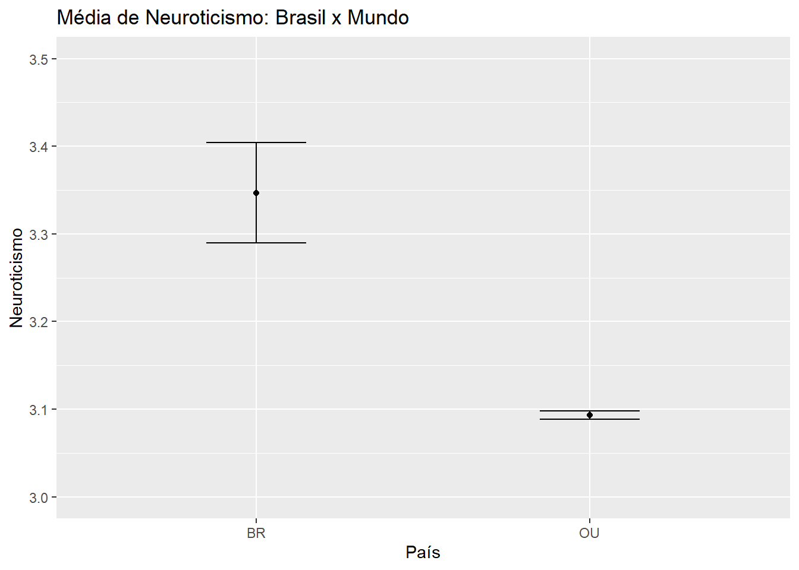
Wilcoxon para uma amostra
Caso os dados não tivessem distribuição normal, o teste mais adequado seria o de Wilcoxon.
# Calcular o valor da mediana, para substituir o valor da média
big_five %>%
filter(country != "BR") %>%
summarise(mediana_neur = median(neur, na.rm = TRUE))# A tibble: 1 × 1
mediana_neur
<dbl>
1 3.1# Teste de Wilcoxon para uma amostra
wilcox.test(
big_five_BR$neur,
mu = 3.1,
conf.int = TRUE)
Wilcoxon signed rank test with continuity correction
data: big_five_BR$neur
V = 9449.5, p-value = 4.845e-05
alternative hypothesis: true location is not equal to 3.1
95 percent confidence interval:
3.25002 3.49999
sample estimates:
(pseudo)median
3.399968 wilcox.test(big_five_BR$neur, mu = 3.1) %>%
rank_biserial()r (rank biserial) | 95% CI
--------------------------------
0.36 | [0.20, 0.51]
- Deviation from a difference of 3.1.wilcox.test(big_five_BR$neur, mu = 3.1) |>
report()Effect sizes were labelled following Funder's (2019) recommendations.
The Wilcoxon signed rank test with continuity correction testing the difference
in rank for big_five_BR$neur and true location of 0 suggests that the effect is
positive, statistically significant, and large (W = 9449.50, p < .001; r (rank
biserial) = 0.36, 95% CI [0.20, 0.51])O teste de postos com sinal de Wilcoxon com correção de continuidade, testando a diferença no ranqueamento de neuroticismo dos brasileiros em relação ao valor de referência, sugere que o efeito é positivo, estatisticamente significativo e de magnitude moderada (W = 9449,50, p < 0,001; r biserial de postos = 0,36, IC 95% [0,20; 0,51]).
Teste-t para amostras independentes
Essa análise estatística se aplica à comparação das médias de dois grupos em que os participantes estão em um grupo OU em outro, não sendo possível estar nos dois grupos ao mesmo tempo. Por isso a denominação de amostras independentes. Para isso, vamos usar o dataframe big_five_BR e analisar o efeito de gênero (sexo, na verdade, pois só consideraremos as categorias masculino e feminino) nos cinco grandes fatores de personalidade.
Preparação do banco de dados e carregamento dos pacotes
É necessário preparar a variável gênero do dataframe big_five_BR. Como o teste-t só funciona para duas categorias e a variável gender mais de duas, vamos selecionar somente os participantes que declararam sexo masculino ou feminino e salvar esse novo dataframe com o nome de big_five_BR_nona.
# primeiro passo: transformar a categoria "outros" em NA
big_five_BR %>% count(gender)# A tibble: 4 × 2
gender n
<dbl> <int>
1 0 1
2 1 89
3 2 83
4 3 2big_five_BR_nona <- big_five_BR %>% filter(gender %in% c(1, 2))
big_five_BR_nona %>% count(gender)# A tibble: 2 × 2
gender n
<dbl> <int>
1 1 89
2 2 83Verificação da homogeneidade das variâncias
Antes de realizar a análise propriamente dita, temos realizar dois passos:
Transformar a variável gender em fator.
Verificar a homogeneidade das variâncias com o Teste de Levene
Para a realização dessa análise, vamos usar o pacote car, que será empregado apenas em poucas análises, então não precisamos carregar o pacote (para não sobrecarregar o sistema), mas precisamos ter o pacote instalado para apenas chamar a função desejada do pacote.
# install.packages("car")
# library(car)
# Transformar gender em fator
big_five_BR_nona$gender <- factor(big_five_BR_nona$gender,
levels = c(1, 2),
labels = c("Male", "Female"))
# Teste de Levene usando o pacote car
car::leveneTest(extr ~ gender, big_five_BR_nona, center=mean)Levene's Test for Homogeneity of Variance (center = mean)
Df F value Pr(>F)
group 1 0.0564 0.8126
170 car::leveneTest(neur ~ gender, big_five_BR_nona, center=mean)Levene's Test for Homogeneity of Variance (center = mean)
Df F value Pr(>F)
group 1 0.2378 0.6265
170 car::leveneTest(amab ~ gender, big_five_BR_nona, center=mean)Levene's Test for Homogeneity of Variance (center = mean)
Df F value Pr(>F)
group 1 1.2002 0.2748
170 car::leveneTest(cons ~ gender, big_five_BR_nona, center=mean)Levene's Test for Homogeneity of Variance (center = mean)
Df F value Pr(>F)
group 1 0.3058 0.581
170 car::leveneTest(aber ~ gender, big_five_BR_nona, center=mean)Levene's Test for Homogeneity of Variance (center = mean)
Df F value Pr(>F)
group 1 0.102 0.7498
170 ## OBS: Por default, o teste realizado pelo pacote car tem como base a mediana,
## que é mais robusto, mas, para ficar igual ao SPSS,
## mudamos para a média, por isso o argumento center=mean.Observou-se que todos os p-valores foram superiores a 0,05, indicando não haver diferenças significativas entre as variâncias, que, portanto, podem ser assumidas como homogêneas. Sendo assim, parte-se para a realização dos testes t propriamente ditos.
t_extr <- t.test(extr ~ gender, big_five_BR_nona, var.equal = TRUE)
t_neur <- t.test(neur ~ gender, big_five_BR_nona, var.equal = TRUE)
t_amab <- t.test(amab ~ gender, big_five_BR_nona, var.equal = TRUE)
t_cons <- t.test(cons ~ gender, big_five_BR_nona, var.equal = TRUE)
t_aber <- t.test(aber ~ gender, big_five_BR_nona, var.equal = TRUE)
data.frame(
Fatores = c('extr','neur','amab','cons','aber'),
p_value = c(t_extr$p.value,
t_neur$p.value,
t_amab$p.value,
t_cons$p.value,
t_aber$p.value)) %>%
kable()| Fatores | p_value |
|---|---|
| extr | 0.5633147 |
| neur | 0.1635554 |
| amab | 0.6032818 |
| cons | 0.4777589 |
| aber | 0.0578838 |
tidy(t_extr)# A tibble: 1 × 10
estimate estimate1 estimate2 statistic p.value parameter conf.low conf.high
<dbl> <dbl> <dbl> <dbl> <dbl> <dbl> <dbl> <dbl>
1 0.0291 3.01 2.99 0.579 0.563 170 -0.0700 0.128
# ℹ 2 more variables: method <chr>, alternative <chr>tidy(t_neur)# A tibble: 1 × 10
estimate estimate1 estimate2 statistic p.value parameter conf.low conf.high
<dbl> <dbl> <dbl> <dbl> <dbl> <dbl> <dbl> <dbl>
1 -0.158 3.27 3.43 -1.40 0.164 170 -0.382 0.0650
# ℹ 2 more variables: method <chr>, alternative <chr>tidy(t_amab)# A tibble: 1 × 10
estimate estimate1 estimate2 statistic p.value parameter conf.low conf.high
<dbl> <dbl> <dbl> <dbl> <dbl> <dbl> <dbl> <dbl>
1 -0.0338 3.10 3.13 -0.521 0.603 170 -0.162 0.0944
# ℹ 2 more variables: method <chr>, alternative <chr>tidy(t_cons)# A tibble: 1 × 10
estimate estimate1 estimate2 statistic p.value parameter conf.low conf.high
<dbl> <dbl> <dbl> <dbl> <dbl> <dbl> <dbl> <dbl>
1 0.0387 3.25 3.21 0.711 0.478 170 -0.0686 0.146
# ℹ 2 more variables: method <chr>, alternative <chr>tidy(t_aber)# A tibble: 1 × 10
estimate estimate1 estimate2 statistic p.value parameter conf.low conf.high
<dbl> <dbl> <dbl> <dbl> <dbl> <dbl> <dbl> <dbl>
1 0.109 3.46 3.35 1.91 0.0579 170 -0.00368 0.222
# ℹ 2 more variables: method <chr>, alternative <chr>Os t-testes de amostras independentes comparando brasileiros (n = 171) ao restante da amostra não revelaram diferenças estatisticamente significativas em nenhum dos cinco fatores do Big Five: extroversão (M = 3,01 vs. 2,99), t(170) = 0,58, p = 0,563; neuroticismo (M = 3,27 vs. 3,43), t(170) = −1,40, p = 0,164; amabilidade (M = 3,10 vs. 3,13), t(170) = −0,52, p = 0,603; conscienciosidade (M = 3,25 vs. 3,21), t(170) = 0,71, p = 0,478; e abertura (M = 3,46 vs. 3,35), t(170) = 1,91, p = 0,058. O fator abertura aproximou-se do limiar de significância convencional, embora sem alcançá-lo.
Cálculo do Tamanho do Efeito (d de Cohen)
# install.packages("effsize")
effsize::cohen.d(aber ~ gender, data = big_five_BR_nona)
Cohen's d
d estimate: 0.2913709 (small)
95 percent confidence interval:
lower upper
-0.01143926 0.59418111 data.frame("d de Cohen" = c("< 0,2",
"> 0,2 até 0,5",
"> 0,5 até 0,8",
"> 0.8"),
"Interpretação" = c("irrelevante",
"pequeno",
"moderado",
"grande")) %>% kable()| d.de.Cohen | Interpretação |
|---|---|
| < 0,2 | irrelevante |
| > 0,2 até 0,5 | pequeno |
| > 0,5 até 0,8 | moderado |
| > 0.8 | grande |
O d de Cohen para abertura em função do sexo foi de 0,29 (IC 95% [−0,01; 0,59]), indicando um efeito de magnitude pequena. Contudo, o intervalo de confiança inclui o zero, o que é coerente com o resultado do t-teste (p = 0,058) e sugere que a diferença entre os grupos não pode ser distinguida de zero com 95% de confiança. Em outras palavras, embora o tamanho do efeito pontual aponte para uma diferença pequena, a imprecisão da estimativa impede uma conclusão definitiva.
Apresentação dos resultados em uma tabela
data.frame(Variável = c("Extroversão","Neuroticismo","Amabilidade",
"Conscienciosidade","Abertura"),
t = c(round(t_extr$statistic,digits = 3),
round(t_neur$statistic,digits = 3),
round(t_amab$statistic,digits = 3),
round(t_cons$statistic,digits = 3),
round(t_aber$statistic,digits = 3)),
gl = c(t_extr$parameter,
t_neur$parameter,
t_amab$parameter,
t_cons$parameter,
t_aber$parameter),
p = c(round(t_extr$p.value,digits = 3),
round(t_neur$p.value,digits = 3),
round(t_amab$p.value,digits = 3),
round(t_cons$p.value,digits = 3),
round(t_aber$p.value,digits = 3)),
M = c(round(t_extr$estimate[1],digits=2),
round(t_neur$estimate[1],digits=2),
round(t_amab$estimate[1],digits=2),
round(t_cons$estimate[1],digits=2),
round(t_aber$estimate[1],digits=2)),
"F"=c(round(t_extr$estimate[2],digits=2),
round(t_neur$estimate[2],digits=2),
round(t_amab$estimate[2],digits=2),
round(t_cons$estimate[2],digits=2),
round(t_aber$estimate[2],digits=2))) %>% pander()| Variável | t | gl | p | M | F |
|---|---|---|---|---|---|
| Extroversão | 0.579 | 170 | 0.563 | 3.01 | 2.99 |
| Neuroticismo | -1.399 | 170 | 0.164 | 3.27 | 3.43 |
| Amabilidade | -0.521 | 170 | 0.603 | 3.1 | 3.13 |
| Conscienciosidade | 0.711 | 170 | 0.478 | 3.25 | 3.21 |
| Abertura | 1.909 | 170 | 0.058 | 3.46 | 3.35 |
Representação gráfica
big_five_BR_nona %>%
ggplot() +
geom_point(aes(x=gender,
y=amab),
stat = "summary",
fun = "mean") +
geom_errorbar(aes(x=gender,
y=amab),
stat = "summary",
fun.data = "mean_se",
width = 0.3,
na.rm = TRUE) +
# Redimensionamento do eixo y
coord_cartesian(ylim = c(1,5)) +
# Título e rótulos dos eixos
labs(title = "Diferenças de média por Sexo",
subtitle = "Amabilidade x Gênero",
x = "Gênero",
y = "Amabilidade")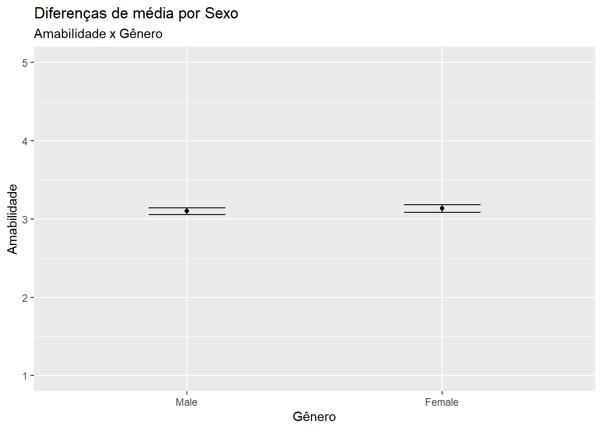
Teste U de Mann-Whitney
O equivalente não paramétrico do t-teste para duas amostras independentes é o teste de Wilcoxon-Mann-Whitney (também chamado de teste U de Mann-Whitney). No R:
w_extr <- wilcox.test(extr ~ gender, data = big_five_BR_nona, conf.int = TRUE)
w_neur <- wilcox.test(neur ~ gender, data = big_five_BR_nona, conf.int = TRUE)
w_amab <- wilcox.test(amab ~ gender, data = big_five_BR_nona, conf.int = TRUE)
w_cons <- wilcox.test(cons ~ gender, data = big_five_BR_nona, conf.int = TRUE)
w_aber <- wilcox.test(aber ~ gender, data = big_five_BR_nona, conf.int = TRUE)
tidy(w_extr)# A tibble: 1 × 7
estimate statistic p.value conf.low conf.high method alternative
<dbl> <dbl> <dbl> <dbl> <dbl> <chr> <chr>
1 0.00000129 3924. 0.479 -0.0999 0.100 Wilcoxon rank sum… two.sided tidy(w_neur)# A tibble: 1 × 7
estimate statistic p.value conf.low conf.high method alternative
<dbl> <dbl> <dbl> <dbl> <dbl> <chr> <chr>
1 -0.200 3266 0.190 -0.400 0.1000 Wilcoxon rank sum t… two.sided tidy(w_amab)# A tibble: 1 × 7
estimate statistic p.value conf.low conf.high method alternative
<dbl> <dbl> <dbl> <dbl> <dbl> <chr> <chr>
1 -0.0000661 3532 0.621 -0.200 0.1000 Wilcoxon rank sum… two.sided tidy(w_cons)# A tibble: 1 × 7
estimate statistic p.value conf.low conf.high method alternative
<dbl> <dbl> <dbl> <dbl> <dbl> <chr> <chr>
1 0.00000881 3915 0.496 -0.1000 0.100 Wilcoxon rank sum… two.sided tidy(w_aber)# A tibble: 1 × 7
estimate statistic p.value conf.low conf.high method alternative
<dbl> <dbl> <dbl> <dbl> <dbl> <chr> <chr>
1 0.100 4284. 0.0696 -0.0000669 0.200 Wilcoxon rank sum… two.sided # tamanhos de efeito
rank_biserial(extr ~ gender, data = big_five_BR_nona)r (rank biserial) | 95% CI
---------------------------------
0.06 | [-0.11, 0.23]rank_biserial(neur ~ gender, data = big_five_BR_nona)r (rank biserial) | 95% CI
---------------------------------
-0.12 | [-0.28, 0.06]rank_biserial(amab ~ gender, data = big_five_BR_nona)r (rank biserial) | 95% CI
---------------------------------
-0.04 | [-0.21, 0.13]rank_biserial(cons ~ gender, data = big_five_BR_nona)r (rank biserial) | 95% CI
---------------------------------
0.06 | [-0.11, 0.23]rank_biserial(aber ~ gender, data = big_five_BR_nona)r (rank biserial) | 95% CI
---------------------------------
0.16 | [-0.01, 0.32]O teste de Wilcoxon-Mann-Whitney não revelou diferenças estatisticamente significativas entre homens e mulheres brasileiros em nenhum dos cinco fatores de personalidade: extroversão (W = 3923, p = 0,479, r = 0,06, IC 95% [−0,11; 0,23]), neuroticismo (W = 3266, p = 0,190, r = −0,12, IC 95% [−0,28; 0,06]), amabilidade (W = 3532, p = 0,621, r = −0,04, IC 95% [−0,21; 0,13]), conscienciosidade (W = 3915, p = 0,496, r = 0,06, IC 95% [−0,11; 0,23]) e abertura (W = 4284, p = 0,070, r = 0,16, IC 95% [−0,01; 0,32]). Os tamanhos de efeito foram negligenciáveis em todos os fatores, e todos os intervalos de confiança do r biserial de postos incluíram o zero, corroborando a ausência de diferenças relevantes entre os grupos.
Teste-t para amostras pareadas
Muitas vezes, os pesquisadores estão interessados em comparar o mesmo grupo de pessoas em duas situações diferentes, como por exemplo, antes e após alguma intervenção (pré e pós-teste). Como o grupo de pessoas é o mesmo, diz-se que o teste-t é para amostras pareadas.
Para realizar essa análise, vamos utilizar um banco de dados fictício que contém duas supostas medidas de habilidades em leitura, uma realizada antes de um programa de intervenção para estimulação da leitura (pre_teste), e uma realizada após o programa (pos_teste).
set.seed(123)
# Criação de um dataframe para análise de dados pareados
df <- data.frame(id = paste("s",1:30,sep=""),
pre_teste = rnorm(30, mean = 5.14, sd = 1.23),
pos_teste = rnorm(30, mean = 6.78, sd = 0.93))
saveRDS(df, "df.rds")Teste-t para amostras pareadas
# Teste t
t_par <- t.test(df$pos_teste,df$pre_teste,paired = TRUE)
tidy(t_par)# A tibble: 1 × 8
estimate statistic p.value parameter conf.low conf.high method alternative
<dbl> <dbl> <dbl> <dbl> <dbl> <dbl> <chr> <chr>
1 1.86 6.65 0.000000270 29 1.29 2.44 Paire… two.sided # Cálculo do Tamanho do efeito
effsize::cohen.d(df$pos_teste,df$pre_teste,paired = TRUE)
Cohen's d
d estimate: 1.848099 (large)
95 percent confidence interval:
lower upper
0.9331194 2.7630795 O t-teste para amostras pareadas indicou que os escores do pós-teste (M = 6,78) foram significativamente superiores aos do pré-teste (M = 5,14), t(29) = 6,65, p < 0,001, IC 95% [1,29; 2,44]. O tamanho do efeito foi grande (d = 1,85, IC 95% [0,93; 2,76]), indicando que a diferença entre os momentos de avaliação corresponde a aproximadamente 1,8 desvios padrão.
OBS: Lembrar que os dados são fictícios.
Apresentação dos resultados em uma tabela
# usando a função summary
describe(df[, c("pre_teste", "pos_teste")]) vars n mean sd median trimmed mad min max range skew kurtosis
pre_teste 1 30 5.08 1.21 5.05 5.06 1.08 2.72 7.34 4.62 0.14 -0.79
pos_teste 2 30 6.95 0.78 6.82 6.94 0.70 5.34 8.80 3.46 0.14 -0.24
se
pre_teste 0.22
pos_teste 0.14Representação gráfica
# Calcular médias
medias_t_teste_pareado <- c(mean(df$pre_teste), mean(df$pos_teste))
# Gráfico
plot(x = 1:2,
y = medias_t_teste_pareado,
pch = 16, # círculo preenchido
cex = 1.5, # tamanho do ponto
type = "o", # pontos + linha
xlim = c(0.5, 2.5),
ylim = c(4, 8),
xaxt = "n", # suprime eixo x automático
xlab = "",
ylab = "Habilidade de Leitura",
main = "Pré-teste vs. Pós-teste")
# Rótulos do eixo x
axis(1, at = 1:2, labels = c("Pré-teste", "Pós-teste"))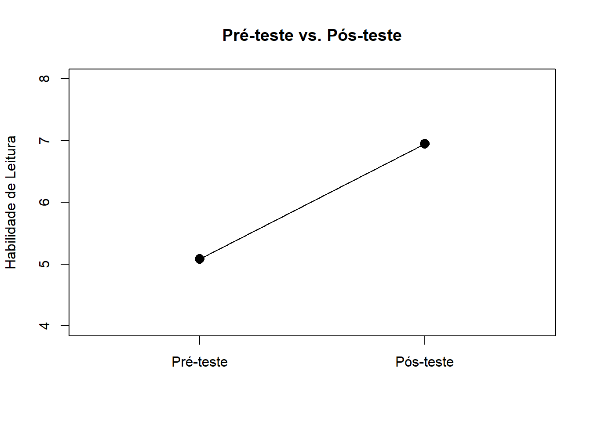
Wilcoxon para amostras pareadas
# Teste de Wilcoxon pareado
w_par <- wilcox.test(df$pos_teste, df$pre_teste,
paired = TRUE,
conf.int = TRUE)
tidy(w_par)# A tibble: 1 × 7
estimate statistic p.value conf.low conf.high method alternative
<dbl> <dbl> <dbl> <dbl> <dbl> <chr> <chr>
1 1.91 442 0.00000119 1.28 2.52 Wilcoxon signed … two.sided # tamanho de efeito
rank_biserial(df$pos_teste, df$pre_teste, paired = TRUE)r (rank biserial) | 95% CI
--------------------------------
0.90 | [0.79, 0.96]O teste de Wilcoxon para amostras pareadas indicou que os escores do pós-teste foram significativamente superiores aos do pré-teste (V = 442, p < 0,001, IC 95% [1,28; 2,52]). O tamanho do efeito foi grande (r biserial de postos = 0,90, IC 95% [0,79; 0,96]), sugerindo que a diferença entre os dois momentos de avaliação é tanto estatisticamente significativa quanto praticamente relevante.
Análise de Variância
O teste-t apresenta uma limitação importante, que é a de só conseguir comparar duas categorias de uma variável. Para superar essa limitação e podermos comparar mais de duas categorias de uma variável é preciso utilizar uma Análise de Variância (ANOVA).
ANOVA de uma via
Agora, vamos usar o dataframe rwas para verificar se há efeito do nível de escolaridade (fundamental, médio, superior, pós-graduação) sobre a medida de autoritarismo de direita mensurada por meio da Right Wing Authoritarianism Scale. Para isso, é necessário importar o banco de dados:
## Cria um objeto com o endereço (link) onde está o arquivo
link_rwas <- "https://github.com/jmhbueno/Arquivos_aulas/raw/main/rwas.rds"
## Importa o arquivo do github para o computador (fora do R)
download.file(
url = link_rwas,
destfile = "rwas.rds",
mode = "wb")
rwas <-
readRDS("rwas.rds")ANOVA de uma via
rwas %>% select(education) %>% distinct() education
1 University degree
2 Graduate degree
3 Less than high school
4 High school
5 <NA># Criação do modelo usando a função aov do pacote stats (Base do R)
anova_auth <- aov(auth ~ education, rwas)
# visualização dos resultados
summary.aov(anova_auth) Df Sum Sq Mean Sq F value Pr(>F)
education 3 38682 12894 102 <2e-16 ***
Residuals 9775 1235734 126
---
Signif. codes: 0 '***' 0.001 '**' 0.01 '*' 0.05 '.' 0.1 ' ' 1
102 observations deleted due to missingness# saída mais elegante
# summary.aov(anova_auth)[[1]] %>% kable(digits = 1)Nesse caso, há quatro categorias dentro da variável education, mais os NAs:
| education |
|---|
| University degree |
| Graduate degree |
| Less than high school |
| High school |
| NA |
O fato de a ANOVA ter sido estatisticamente significativa nos diz que há diferenças importantes nessas quatro categorias, mas não conhecemos par a par, se há diferenças ou não. Para isso, é preciso empregar os Testes Post-Hoc, que fazem comparações múltiplas, dois a dois. Para realizar esses testes, precisamos instalar o pacote DescTools, para poder utilizar a função PostHocTest().
# Testes de post-hoc
# post-hocs permitidos: "hsd" (Tukey's HSD), "bonferroni", "lsd", "scheffe", "duncan"
# o mais recomendado tende a ser o "hsd"
# install.packages("DescTools")
# library(DescTools)
PostHocTest(
x = anova_auth,
ordered = FALSE,
conf.level = 0.95,
method = "hsd")
Posthoc multiple comparisons of means : Tukey HSD
95% family-wise confidence level
$education
diff lwr.ci upr.ci pval
High school-Less than high school -1.128433 -2.165706 -0.09116049 0.0267
University degree-Less than high school -3.550863 -4.596796 -2.50493131 <2e-16
Graduate degree-Less than high school -5.822985 -6.930659 -4.71531191 <2e-16
University degree-High school -2.422430 -3.131166 -1.71369426 <2e-16
Graduate degree-High school -4.694552 -5.491592 -3.89751193 <2e-16
Graduate degree-University degree -2.272122 -3.080399 -1.46384454 <2e-16
High school-Less than high school *
University degree-Less than high school ***
Graduate degree-Less than high school ***
University degree-High school ***
Graduate degree-High school ***
Graduate degree-University degree ***
---
Signif. codes: 0 '***' 0.001 '**' 0.01 '*' 0.05 '.' 0.1 ' ' 1Observa-se que há diferenças estatisticamente significativas entre todos os pares. Isso ocorre, neste caso, porque o número de participantes da pesquisa é muito alto (N=9881). Normalmente, para uma ANOVA de uma via, recomenda-se o F de Cohen.
# Tamanho do efeito
# install.packages("effectsize")
cohens_f(
anova_auth, # localização dos dados
partial = TRUE, # mostra resultados parciais
squared = FALSE, # T para mostrar f ao quadrado
model2 = NULL, # modelo mais simples, é possível testar outros modelos
ci = 0.95, # intervalo de confiança
alternative = "greater")For one-way between subjects designs, partial eta squared is equivalent
to eta squared. Returning eta squared.# Effect Size for ANOVA
Parameter | Cohen's f | 95% CI
-----------------------------------
education | 0.18 | [0.16, Inf]
- One-sided CIs: upper bound fixed at [Inf].# referência (Steiger e Fouladi, 1997/2016)
data.frame("f de Cohen" = c("< 0,10",
"> 0,10 até 0,25",
"> 0,25 até 0,40",
"> 0.40"),
"Interpretação" = c("irrelevante",
"pequeno",
"médio",
"grande")) %>% kable()| f.de.Cohen | Interpretação |
|---|---|
| < 0,10 | irrelevante |
| > 0,10 até 0,25 | pequeno |
| > 0,25 até 0,40 | médio |
| > 0.40 | grande |
Apresentação dos dados em tabela
# describeBy
describeBy(auth ~ education,
data = rwas)
Descriptive statistics by group
education: Less than high school
vars n mean sd median trimmed mad min max range skew kurtosis
auth 1 1001 104.95 12.56 103 104.31 10.38 0 179 179 -0.09 8.44
se
auth 0.4
------------------------------------------------------------
education: High school
vars n mean sd median trimmed mad min max range skew kurtosis se
auth 1 3447 103.82 11.77 102 103.25 8.9 0 161 161 0.16 4.68 0.2
------------------------------------------------------------
education: University degree
vars n mean sd median trimmed mad min max range skew kurtosis se
auth 1 3208 101.4 10.85 100 100.89 7.41 20 159 139 0.25 3.95 0.19
------------------------------------------------------------
education: Graduate degree
vars n mean sd median trimmed mad min max range skew kurtosis
auth 1 2123 99.13 10.26 99 99 7.41 0 157 157 -0.46 10.61
se
auth 0.22Representação gráfica
# Calcular as médias por nível de escolaridade
medias_edu <- rwas %>%
drop_na(education) %>%
group_by(education) %>%
summarise(media = mean(auth, na.rm = TRUE))
# Gráfico
plot(x = 1:4,
y = medias_edu$media,
pch = 16, # círculo preenchido
cex = 1.5, # tamanho do ponto
type = "o", # pontos + linha
xlim = c(0.5, 4.5),
ylim = c(95, 110),
xaxt = "n", # suprime eixo x automático
xlab = "Nível Educacional",
ylab = "Autoritarismo",
main = "Autoritarismo por nível educacional")
# Rótulos do eixo x
axis(1,
at = 1:4,
labels = medias_edu$education,
cex.axis = 0.8) # tamanho da fonte dos rótulos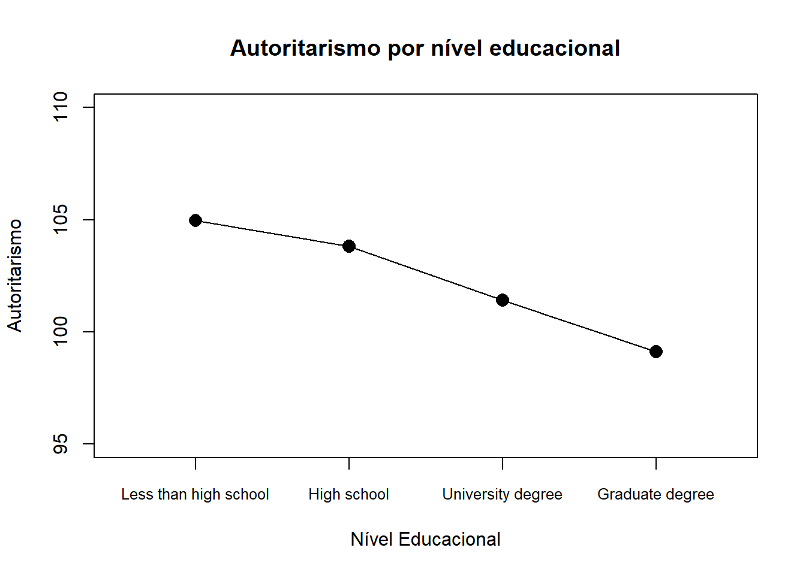
Relato de resultados, considerando os resultados de uma forma geral: Foi realizada uma ANOVA de uma via para verificar o efeito do nível de escolaridade sobre o autoritarismo de direita. O resultado indicou efeito estatisticamente significativo da escolaridade sobre o autoritarismo (F(3, 9775) = 102; p < 0,001). O tamanho do efeito, calculado pelo f de Cohen, foi de 0,18 (IC 95% [0,16; ∞]), classificado como pequeno. As comparações múltiplas post-hoc pelo método HSD de Tukey revelaram diferenças estatisticamente significativas entre todos os pares de grupos (todos os p < 0,05). A inspeção das médias indica uma tendência decrescente e consistente: participantes com ensino fundamental apresentaram as maiores médias de autoritarismo (M = 105,0; DP = 12,6), seguidos pelos participantes com ensino médio (M = 103,8; DP = 11,8), ensino superior (M = 101,4; DP = 10,8) e pós-graduação (M = 99,1; DP = 10,3). Esses resultados sugerem que níveis mais elevados de escolaridade estão associados a menores níveis de autoritarismo de direita, embora o tamanho do efeito pequeno indique que a escolaridade explica apenas uma parcela modesta da variância total dessa variável.
ANOVA de medidas repetidas
A ANOVA de uma via permite comparar 3 ou mais grupos (por exemplo, níveis de escolaridade) quanto a uma variável (por exemplo, autoritarismo), como vimos no exemplo anterior. No entanto, essa análise se aplica a somente uma variável dependente e a grupos independentes. Se quisermos realizar uma comparação de grupos pareados ao longo de duas ou mais medidas, teremos que usar uma ANOVA de medidas repetidas. Para isso precisaremos instalar o pacote ez, que facilita a realização dessa análise.
Instalação de pacotes
install.packages("ez")Warning: o pacote 'ez' está em uso e não será instaladolibrary(ez)Geração de um banco de dados
Para realizar essa análise, vamos gerar um banco de dados fictício em que a variável id identifica os sujeitos (N = 100), e as variáveis de t1 a t5 representam as medidas repetidas. Nesse caso, vamos SUPOR a seguinte situação como problema de pesquisa. Um novo programa para a prática de mindfulness (FICTÍCIO) teria sido aplicado a um grupo de praticantes e a pergunta é se esse programa desenvolve habilidades relacionadas ao mindfulness. Portanto, as cinco medidas encontradas no dataframe df_aov_mr (t1 a t5) estão representando as habilidades decorrentes da prática de mindfulness.
df_aov_mr <- data.frame(id = paste("s",1:100,sep = ""),
t1 = round(rnorm(n=100, mean = -1.2, sd = 0.54),digits = 3),
t2 = round(rnorm(n=100, mean = -0.7, sd = 0.52),digits = 3),
t3 = round(rnorm(n=100, mean = -0.1, sd = 0.57),digits = 3),
t4 = round(rnorm(n=100, mean = 0.4, sd = 0.55),digits = 3),
t5 = round(rnorm(n=100, mean = 0.5, sd = 0.54),digits = 3))
glimpse(df_aov_mr)Rows: 100
Columns: 6
$ id <chr> "s1", "s2", "s3", "s4", "s5", "s6", "s7", "s8", "s9", "s10", "s11",…
$ t1 <dbl> -0.995, -1.471, -1.380, -1.750, -1.779, -1.036, -0.958, -1.171, -0.…
$ t2 <dbl> -0.153, -1.246, -1.355, 0.985, -0.917, -0.545, -0.369, -0.952, -0.4…
$ t3 <dbl> -0.397, -0.379, -0.073, 0.641, 1.207, 0.782, -0.176, -1.101, -0.322…
$ t4 <dbl> 0.287, 0.758, 0.551, 0.964, 0.850, 0.285, 0.608, -0.120, 0.871, 0.1…
$ t5 <dbl> 0.971, 0.312, 0.780, 0.289, -0.090, 1.153, 0.900, 1.431, 0.535, 1.1…view(df_aov_mr)Transformação do banco de dados
Para a realização da análise de variância por medidas repetidas é necessário transformar o banco de dados para que as medidas repetidas fiquem em uma linha diferente. Geralmente, nossos banco de dados estão no formato amplo (wide), mas a análise de medidas repetidas tem que ser realizada com um banco de dados no formato longo (long).
# Usando a função pivot_longer() do tidyverse
df_aov1 <-
df_aov_mr %>% pivot_longer(
cols = 2:6, # variáveis a serem unidas em uma só.
names_to = "tempo", # nome dessa nova variável
values_to = "valores") # valores correspondentes à nova variável
# transformar as variáveis id e tempo em fatores
df_aov1$id <- factor(df_aov1$id)
df_aov1$tempo <- factor(df_aov1$tempo)
glimpse(df_aov1)Rows: 500
Columns: 3
$ id <fct> s1, s1, s1, s1, s1, s2, s2, s2, s2, s2, s3, s3, s3, s3, s3, s4…
$ tempo <fct> t1, t2, t3, t4, t5, t1, t2, t3, t4, t5, t1, t2, t3, t4, t5, t1…
$ valores <dbl> -0.995, -0.153, -0.397, 0.287, 0.971, -1.471, -1.246, -0.379, …ANOVA de medidas repetidas
mod_df_aov1 <- ezANOVA(data = df_aov1, # banco de dados no formato longo
dv = valores, # variável dependente
wid = id, # variável que identifica os sujeitos
within = tempo, # variável intra-sujeitos
detailed = TRUE, # saída mais detalhada
type = 3) # tipo de soma dos quadrados, default 2
mod_df_aov1$ANOVA %>% kable()| Effect | DFn | DFd | SSn | SSd | F | p | p<.05 | ges |
|---|---|---|---|---|---|---|---|---|
| (Intercept) | 1 | 99 | 20.67439 | 27.51542 | 74.38611 | 0 | * | 0.1292821 |
| tempo | 4 | 396 | 227.45655 | 111.72714 | 201.54636 | 0 | * | 0.6202812 |
| Coluna | Nome completo | Descrição |
|---|---|---|
Effect |
Efeito | Identifica a fonte de variação: (Intercept) é a média geral do modelo; tempo é o efeito da variável intra-sujeitos |
DFn |
Graus de liberdade do numerador | Graus de liberdade associados ao efeito. Para tempo com 5 medidas: 5 − 1 = 4 |
DFd |
Graus de liberdade do denominador | Graus de liberdade do erro. Para tempo: 4 × 99 = 396 (DFn × (N−1)) |
SSn |
Soma dos quadrados do efeito | Variância explicada pelo efeito (quanto o tempo explica das diferenças entre as medidas) |
SSd |
Soma dos quadrados do erro | Variância não explicada pelo efeito (variação residual dentro dos sujeitos) |
F |
Estatística F | Razão entre a variância do efeito e a variância do erro: SSn/DFn ÷ SSd/DFd. Quanto maior, mais improvável que o efeito seja acaso |
p |
p-valor | Probabilidade de obter um F tão grande quanto o observado se a hipótese nula fosse verdadeira. Valores < 0,05 indicam efeito significativo |
p<.05 |
Significância | Marcador visual: * indica que o p-valor é menor que 0,05 |
ges |
Generalized Eta Squared (η²g) | Tamanho do efeito: proporção da variância total explicada pelo efeito. Para tempo, ges = 0,60 indica que 60% da variância total é explicada pelas diferenças entre os momentos de medida |
Comparações múltiplas para a verificação de diferenças para a par. Emprega-se uma série de testes-t pareados com p-valor ajustado pelo método de Bonferroni.
# Testes post-hoc
pairwise.t.test(df_aov1$valores, # variável dependente
df_aov1$tempo, # variável de agrupamento
paired = TRUE, # pareado porque são medidas repetidas
p.adjust.method = "bonferroni") # correção para múltiplas comparações
Pairwise comparisons using paired t tests
data: df_aov1$valores and df_aov1$tempo
t1 t2 t3 t4
t2 6.3e-10 - - -
t3 < 2e-16 1.6e-12 - -
t4 < 2e-16 < 2e-16 2.1e-05 -
t5 < 2e-16 < 2e-16 2.4e-10 0.084
P value adjustment method: bonferroni # para apresentar o resultado em uma tabela
pairwise.t.test(df_aov1$valores,
df_aov1$tempo,
paired = TRUE,
p.adjust.method = "bonferroni")$p.value %>%
kable(digits = 3)| t1 | t2 | t3 | t4 | |
|---|---|---|---|---|
| t2 | 0 | NA | NA | NA |
| t3 | 0 | 0 | NA | NA |
| t4 | 0 | 0 | 0 | NA |
| t5 | 0 | 0 | 0 | 0.084 |
Todas as diferenças entre os pares de medidas foram estatisticamente significativas, exceto entre v4 e v5.
OBS.: Os NA representam comparações redundantes, pois a matriz só preenche o triângulo inferior para evitar duplicação (t1 vs. t2 é o mesmo que t2 vs. t1).
Representação dos resultados em tabela
describe(df_aov_mr[, c("t1","t2","t3","t4","t5")]) vars n mean sd median trimmed mad min max range skew kurtosis
t1 1 100 -1.23 0.51 -1.27 -1.24 0.47 -2.45 -0.02 2.43 0.16 -0.27
t2 2 100 -0.70 0.49 -0.79 -0.74 0.43 -1.50 0.98 2.48 0.83 0.39
t3 3 100 -0.04 0.60 -0.05 -0.03 0.57 -1.51 1.37 2.87 -0.14 -0.35
t4 4 100 0.38 0.56 0.44 0.40 0.52 -1.06 1.73 2.79 -0.31 0.11
t5 5 100 0.57 0.48 0.57 0.56 0.52 -0.62 1.81 2.43 0.12 -0.39
se
t1 0.05
t2 0.05
t3 0.06
t4 0.06
t5 0.05Nota-se que as médias vão aumentando prograssivamente de v1 a v5. Porém, como visto anteriormente, a diferença entre v4 e v5 não foi estatisticamente significativa.
Representação gráfica
# Calcular as médias
medias_mr <- colMeans(df_aov_mr[, c("t1","t2","t3","t4","t5")])
# Gráfico
plot(x = 1:5,
y = medias_mr,
pch = 16, # círculo preenchido
cex = 2, # tamanho do ponto
col = "black", # cor do ponto
type = "o", # pontos + linha
lty = 2, # linha tracejada
xlim = c(0.5, 5.5),
xaxt = "n", # suprime eixo x automático
xlab = "Medidas Repetidas",
ylab = "Médias",
main = "ANOVA POR MEDIDAS REPETIDAS")
# Rótulos do eixo x
axis(1, at = 1:5, labels = c("t1","t2","t3","t4","t5"))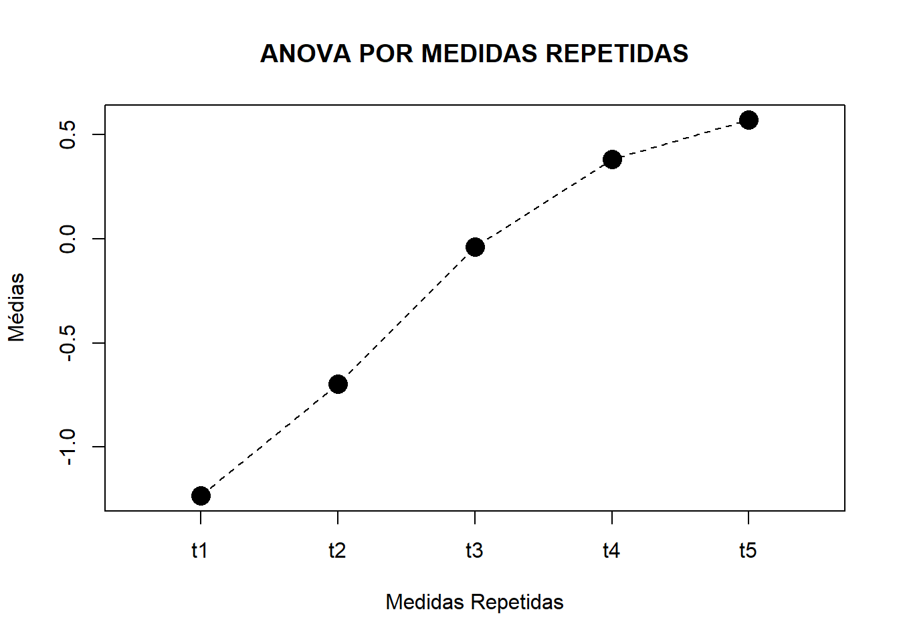
ANOVA de medidas repetidas com grupo controle
Um projeto mais robusto que o anterior utilizaria um grupo controle para poder comparar a eficácia do programa de intervenção entre os dois grupos, um que passa pelo programa (grupo experimental) e outro que não passa (grupo controle). Para simular essa situação, vamos criar o seguinte banco de dados fictício:
Geração de um banco de dados
# Criação de variáveis, sendo a o grupo controle e b o grupo experimental.
v1a <- round(rnorm(n=50, mean = -1.2, sd = 1.0),digits = 3)
v1b <- round(rnorm(n=50, mean = -1.3, sd = 1.1),digits = 3)
v2a <- round(rnorm(n=50, mean = -1.3, sd = 0.9),digits = 3)
v2b <- round(rnorm(n=50, mean = -0.7, sd = 1.1),digits = 3)
v3a <- round(rnorm(n=50, mean = -1.1, sd = 1.0),digits = 3)
v3b <- round(rnorm(n=50, mean = -0.1, sd = 0.9),digits = 3)
v4a <- round(rnorm(n=50, mean = -1.2, sd = 1.0),digits = 3)
v4b <- round(rnorm(n=50, mean = 0.4, sd = 1.1),digits = 3)
v5a <- round(rnorm(n=50, mean = -1.1, sd = 1.1),digits = 3)
v5b <- round(rnorm(n=50, mean = 0.5, sd = 0.9),digits = 3)
# Junção das variáveis "a" num grupo ctrl
ctrl <- data.frame(v1a,v2a,v3a,v4a,v5a,grupo = "ctrl")
# junção das variáveis "b" num grupo expe
expe <- data.frame(v1b,v2b,v3b,v4b,v5b,grupo = "expe")
# modificação dos nomes das variáveis do grupo expe para ficar igual às variáves do grupo ctrl
# esse passo é necessário para posteriormente juntar esses dois dataframes.
expe <- rename(expe,v1a = v1b,v2a=v2b,v3a=v3b,v4a=v4b,v5a=v5b)
# junção dos dataframes ctrl e expe
df_aov_mr2 <- bind_rows(ctrl,expe)
# transformação da variável grupo em fator
df_aov_mr2$grupo <- as.factor(df_aov_mr2$grupo)
# inserção de uma variável id ao dataframe df_aov_mr2
df_aov_mr2 <- cbind(id = paste("s",1:100,sep = ""),df_aov_mr2)
# renomear as variáveis do dataframe df_aov_mr2 para ficar mais simples
df_aov_mr2 <- rename(df_aov_mr2,v1=v1a,v2=v2a,v3=v3a,v4=v4a,v5=v5a)
# transformação da variável id em fator
# passo necessário para rodar a análise posteriormente
df_aov_mr2$id <- factor(df_aov_mr2$id)
glimpse(df_aov_mr2)Rows: 100
Columns: 7
$ id <fct> s1, s2, s3, s4, s5, s6, s7, s8, s9, s10, s11, s12, s13, s14, s15…
$ v1 <dbl> -2.034, -0.621, -2.288, 0.284, -2.386, -1.099, -0.667, -0.613, -…
$ v2 <dbl> -0.523, -0.058, 0.470, -1.326, -3.324, -1.272, -1.115, -1.440, -…
$ v3 <dbl> -0.560, -0.484, -0.483, -2.792, -0.731, -0.132, 0.177, -1.325, -…
$ v4 <dbl> -0.289, -1.058, -2.589, -2.066, -1.363, 1.353, -3.060, -0.069, -…
$ v5 <dbl> -0.237, 1.430, -0.928, -1.049, -0.994, -1.023, -3.133, -2.938, -…
$ grupo <fct> ctrl, ctrl, ctrl, ctrl, ctrl, ctrl, ctrl, ctrl, ctrl, ctrl, ctrl…Transformações no banco de dados
Proceder a transformação do banco de dados do formato amplo para o formato longo, de forma semelhante ao que foi feito com o banco de dados df_aov_mr1.
# Modificação do formato com a função pivot_longer do tidyr
df_aov2 <-
df_aov_mr2 %>%
pivot_longer(cols = 2:6, # variáveis a serem unidas em uma só.
names_to = "tempo", # nome dessa nova variável
values_to = "valores") # valores correspondentes à nova variável
df_aov2$tempo <- as.factor(df_aov2$tempo)
glimpse(df_aov2)Rows: 500
Columns: 4
$ id <fct> s1, s1, s1, s1, s1, s2, s2, s2, s2, s2, s3, s3, s3, s3, s3, s4…
$ grupo <fct> ctrl, ctrl, ctrl, ctrl, ctrl, ctrl, ctrl, ctrl, ctrl, ctrl, ct…
$ tempo <fct> v1, v2, v3, v4, v5, v1, v2, v3, v4, v5, v1, v2, v3, v4, v5, v1…
$ valores <dbl> -2.034, -0.523, -0.560, -0.289, -0.237, -0.621, -0.058, -0.484…ANOVA de medidas repetidas
Com o banco de dados no formato longo já é possível rodar o modelo da ANOVA.
mod_df_aov2 <-
ez::ezANOVA(
data = df_aov2, # banco de dados no formato longo
dv = valores, # variável dependente
wid = id, # variável que identifica os sujeitos
within = tempo, # variável intragrupo
between = grupo, # variável entre grupos (ctrl / expe)
detailed = TRUE, # opção para output mais detalhado
type = 3) # opção pelo método da soma dos quadrados
mod_df_aov2 # printar os resultados$ANOVA
Effect DFn DFd SSn SSd F p p<.05
1 (Intercept) 1 98 240.45864 102.7237 229.40122 2.050068e-27 *
2 grupo 1 98 139.35082 102.7237 132.94281 6.030493e-20 *
3 tempo 4 392 91.47321 432.4869 20.72750 1.640629e-15 *
4 grupo:tempo 4 392 53.72474 432.4869 12.17384 2.444217e-09 *
ges
1 0.31000150
2 0.20657987
3 0.14596388
4 0.09122349
$`Mauchly's Test for Sphericity`
Effect W p p<.05
3 tempo 0.9423337 0.7669628
4 grupo:tempo 0.9423337 0.7669628
$`Sphericity Corrections`
Effect GGe p[GG] p[GG]<.05 HFe p[HF] p[HF]<.05
3 tempo 0.9715117 3.895678e-15 * 1.016636 1.640629e-15 *
4 grupo:tempo 0.9715117 3.921792e-09 * 1.016636 2.444217e-09 *Visualização dos dados em tabela
Os resultados da ANOVA indicam se houve efeito intra e entre grupos, mas não diz em que direção essas diferenças ocorreram. Para isso, é necessário observar as estatísticas descritivas (especialmente as médias) dos grupos.
describeBy(x = df_aov_mr2[, c("v1","v2","v3","v4","v5")],
group = df_aov_mr2$grupo)
Descriptive statistics by group
group: ctrl
vars n mean sd median trimmed mad min max range skew kurtosis se
v1 1 50 -1.38 0.97 -1.31 -1.37 1.03 -4.01 0.66 4.67 -0.25 -0.29 0.14
v2 2 50 -1.47 0.91 -1.44 -1.49 0.85 -3.32 0.91 4.24 0.19 -0.20 0.13
v3 3 50 -1.02 0.93 -0.82 -0.98 0.81 -3.06 1.06 4.12 -0.34 -0.18 0.13
v4 4 50 -1.01 1.01 -0.95 -1.04 1.25 -3.06 1.35 4.41 0.18 -0.75 0.14
v5 5 50 -1.23 1.20 -1.19 -1.27 1.20 -3.90 1.56 5.46 0.29 -0.03 0.17
------------------------------------------------------------
group: expe
vars n mean sd median trimmed mad min max range skew kurtosis se
v1 1 50 -1.42 1.15 -1.17 -1.39 1.28 -4.16 1.00 5.16 -0.23 -0.65 0.16
v2 2 50 -0.39 1.17 -0.36 -0.34 0.85 -3.13 2.26 5.39 -0.25 0.29 0.17
v3 3 50 -0.15 0.98 -0.17 -0.17 0.98 -2.36 2.32 4.67 0.21 -0.17 0.14
v4 4 50 0.42 1.15 0.40 0.38 0.95 -1.72 3.23 4.95 0.34 -0.12 0.16
v5 5 50 0.70 0.92 0.72 0.66 0.66 -0.98 3.05 4.03 0.42 -0.07 0.13Representação gráfica
# usando o ggplot2 {tidyverse}
df_aov2 %>%
ggplot(
aes(x=tempo,
y=valores,
group = grupo,
color = grupo)) +
stat_summary(fun = mean, geom = "line", size = 1) +
stat_summary(fun = mean, geom = "point")Warning: Using `size` aesthetic for lines was deprecated in ggplot2 3.4.0.
ℹ Please use `linewidth` instead.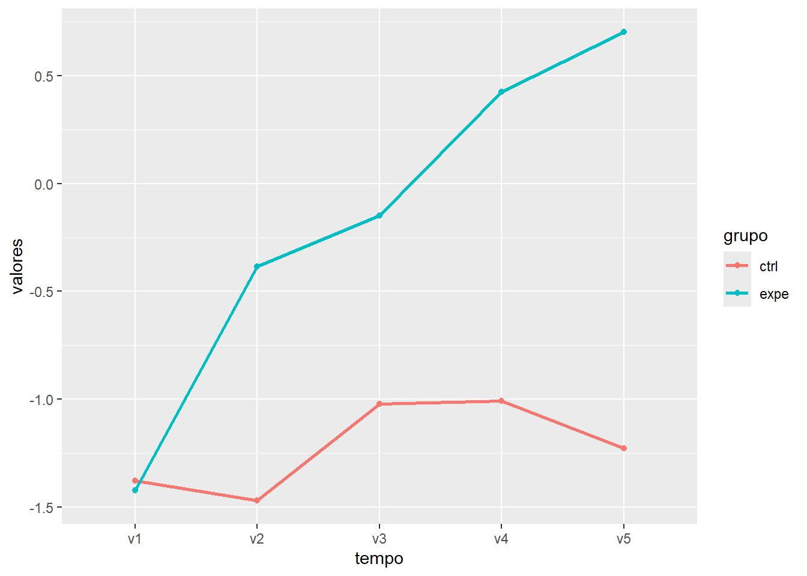
Relato de resultados: Foram realizadas comparações intragrupo (medidas repetidas) e comparações entre grupos (controle e experimental). Notou-se que houve diferença estatisticamente significativa intragrupo (F(gl=4,N=100)=9,489989; p-valor=2.481601e-07) e entre grupos ((F(gl=1,N=100)=112.127948; p-valor=6.401131e-18)).
Exercícios
- Utilizando o dataframe
dataset, verifique se há efeito de sexo (sex) em ansiedade (bai_sum) e depressão (bdi_sum). Observe os dados e escolha a estatística mais apropriada para esse tipo de dado.
Ansiedade - ordinal Depressão - ordinal Sexo - nominal (2 categorias: masculino e feminino, independentes) A estatística mais adequada para essas variáveis é o t-teste.
# Ansiedade
## Primeiro passo: verificar se há homogeneidade de variâncias
car::leveneTest(bai_sum ~ sex, dataset, center=mean)Levene's Test for Homogeneity of Variance (center = mean)
Df F value Pr(>F)
group 1 26.721 2.592e-07 ***
1943
---
Signif. codes: 0 '***' 0.001 '**' 0.01 '*' 0.05 '.' 0.1 ' ' 1## Segundo passo: calcular o t-teste
t.test(bai_sum ~ sex, dataset, var.equal = FALSE)
Welch Two Sample t-test
data: bai_sum by sex
t = 7.4131, df = 1736.2, p-value = 1.919e-13
alternative hypothesis: true difference in means between group F and group M is not equal to 0
95 percent confidence interval:
1.954575 3.360946
sample estimates:
mean in group F mean in group M
9.470346 6.812585 ## Terceiro passo: Cálculo do tamanho de efeito
effsize::cohen.d(bai_sum ~ sex, data = dataset)
Cohen's d
d estimate: 0.3330033 (small)
95 percent confidence interval:
lower upper
0.2405938 0.4254128 # Depressão
# Primeiro passo: verificar se há homogeneidade de variâncias
car::leveneTest(bdi_sum ~ sex, dataset, center=mean)Levene's Test for Homogeneity of Variance (center = mean)
Df F value Pr(>F)
group 1 0.832 0.3618
1940 ## Segundo passo: calcular o t-teste
t.test(bdi_sum ~ sex, dataset, var.equal = TRUE)
Two Sample t-test
data: bdi_sum by sex
t = 2.5181, df = 1940, p-value = 0.01188
alternative hypothesis: true difference in means between group F and group M is not equal to 0
95 percent confidence interval:
0.2015625 1.6211851
sample estimates:
mean in group F mean in group M
9.587603 8.676230 ## Terceiro passo: Cálculo do tamanho de efeito
effsize::cohen.d(bdi_sum ~ sex, data = dataset)
Cohen's d
d estimate: 0.1179096 (negligible)
95 percent confidence interval:
lower upper
0.02600236 0.20981684 - Em relação ao exercício anterior, represente a ansiedade em tabela e a depressão em forma de gráfico.
# Ansiedade
arsenal::tableby(sex ~ bai_sum,
test = FALSE,
data = dataset) %>%
summary(text = TRUE)
| | F (N=1214) | M (N=736) | Total (N=1950) |
|:------------|:--------------:|:--------------:|:--------------:|
|bai_sum | | | |
|- N-Miss | 0 | 5 | 5 |
|- Mean (SD) | 9.470 (8.446) | 6.813 (7.142) | 8.471 (8.082) |
|- Range | 0.000 - 48.000 | 0.000 - 44.000 | 0.000 - 48.000 |# Depressão
dataset %>% drop_na(sex) %>%
ggplot(aes(x=sex, y=bai_sum)) +
geom_bar(stat = "summary",
fun = mean,
color = 'black',
size = 1,
na.rm = TRUE) +
labs(title = "DEPRESSÃO X SEXO",
x = "SEXO",
y = "DEPRESSÃO",
caption = 'Estatística no R',
tag = "NEAP")Warning in geom_bar(stat = "summary", fun = mean, color = "black", size = 1, :
Ignoring unknown parameters: `size`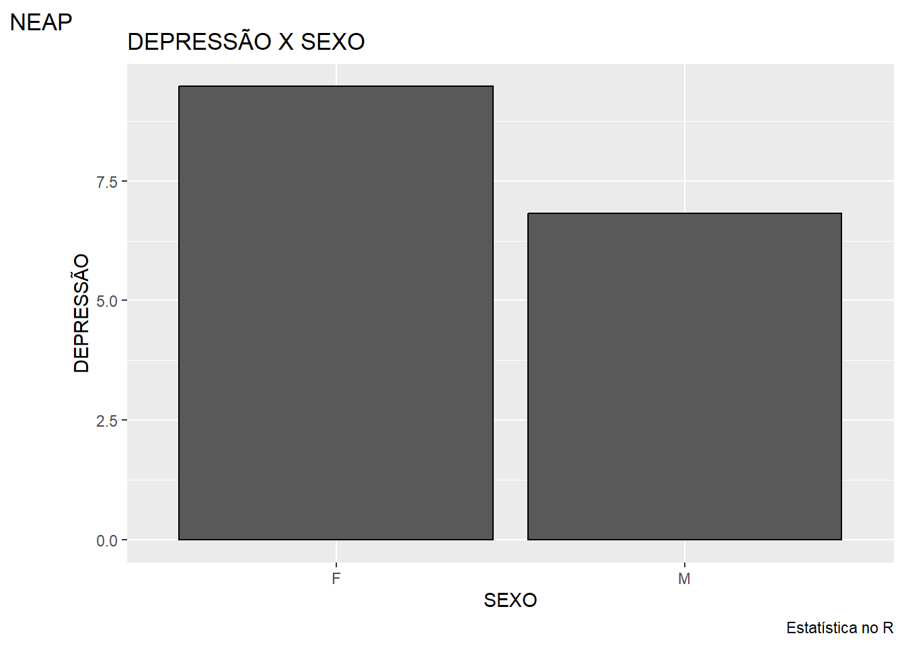
- Utilizando o mesmo dataframe, verifique se há diferenças entre países (country) em ansiedade (bai_sum) e depressão (bdi_sum). Observe os dados e escolha a estatística mais apropriada para esse tipo de dado.
aov_ans_país <- aov(bai_sum ~ country, dataset)
aov_dep_país <- aov(bdi_sum ~ country, dataset)
# visualização dos resultados
summary(aov_ans_país) Df Sum Sq Mean Sq F value Pr(>F)
country 2 230 115.01 1.748 0.174
Residuals 1949 128218 65.79
5 observations deleted due to missingnesssummary(aov_dep_país) Df Sum Sq Mean Sq F value Pr(>F)
country 2 1050 525.2 8.846 0.00015 ***
Residuals 1946 115528 59.4
---
Signif. codes: 0 '***' 0.001 '**' 0.01 '*' 0.05 '.' 0.1 ' ' 1
8 observations deleted due to missingnessdataset %>% group_by(country) %>% summarise(ansiedade = mean(bai_sum, na.rm = TRUE),
depressão = mean(bdi_sum, na.rm = TRUE))# A tibble: 3 × 3
country ansiedade depressão
<fct> <dbl> <dbl>
1 BRAZIL 9.01 10.9
2 PORTUGAL 7.92 9.05
3 SPAIN 8.55 8.86Em relação ao exercício anterior, represente a ansiedade em tabela e a depressão em forma de gráfico.
Execute o código abaixo para gerar o dataframe
df_exe realize uma ANOVA de medidas repetidas com esse dataframe. Note quedf_exestá no formato amplo.
df_ex <- data.frame(id = paste("s",1:80,sep = ""),
v1 = round(rnorm(n=80, mean = 20, sd = 3),digits = 2),
v2 = round(rnorm(n=80, mean = 22, sd = 3),digits = 2),
v3 = round(rnorm(n=80, mean = 26, sd = 3),digits = 2),
v4 = round(rnorm(n=80, mean = 27, sd = 3),digits = 2),
v5 = round(rnorm(n=80, mean = 27, sd = 3),digits = 2))df_ex_longer <- df_ex %>% pivot_longer(cols = 2:6, # variáveis a serem unidas em uma só.
names_to = "medidas", # nome dessa nova variável
values_to = "valores") # valores correspondentes à nova variável
# transformar as variáveis id e tempo em fatores
df_ex_longer$id <- factor(df_ex_longer$id)
df_ex_longer$medidas <- factor(df_ex_longer$medidas)
mod_df_ex_longer <- ez::ezANOVA(data = df_ex_longer, # banco de dados no formato longo
dv = valores, # variável dependente
wid = id, # variável que identifica os sujeitos
within = medidas, # variável intra-sujeitos
detailed = TRUE, # saída mais detalhada
type = 3) # tipo de soma dos quadrados, default 2# Criação de variáveis correlacionadas
library(MASS)
r_matrix <- big_five %>% select(E1:E10) %>% corr.test()
matrix_1 <- mvrnorm(10, c(2,2.2,2.4,2.6,2.8,3,3.2,3.4,3.6,3.8),r_matrix$r)
matrix_1 <- data.frame(matrix_1)
corr.test(matrix_1$E1,matrix_1$E4)
detach(MASS)bases dados para treino e aulas
# install.packages("dados")
library(dados)
dados::dados_gapminder %>%
group_by(continente) %>%
summarise(média_exp = mean(expectativa_de_vida),
desvP_exp = sd(expectativa_de_vida),
média_pop = mean(populacao),
desvP_pop = sd(populacao),
média_pib = mean(pib_per_capita),
desvP_pib = sd(pib_per_capita))
dados::dados_gapminder %>% distinct(pais) %>% pander()
dados::dados_gapminder %>% filter(pais == "Brasil")